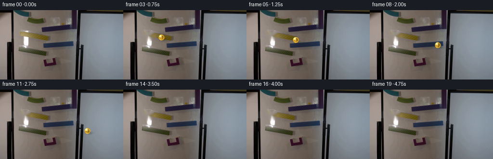
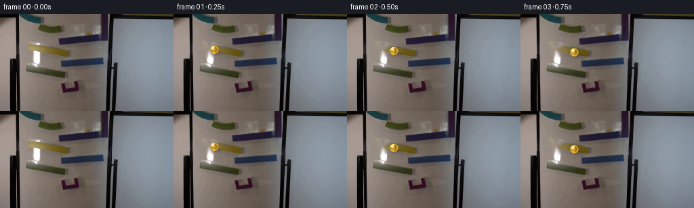
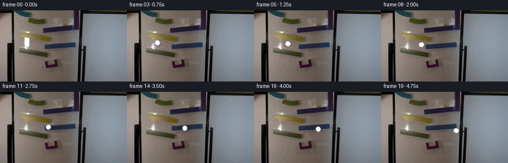
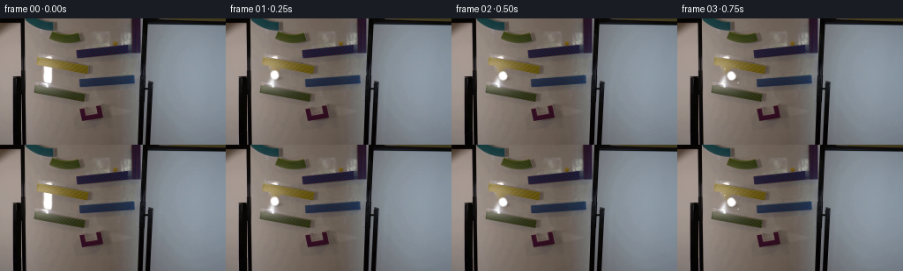
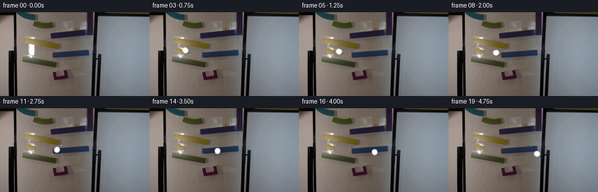
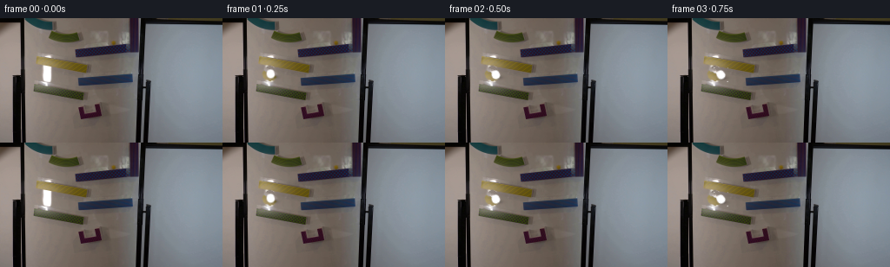

CODING AGENTS AS PIXEL WORLD MODELS
traex/DeepSeek-V4.1-Flash · 0108
点击播放 · 原生 RGB 像素
逐轮保存的候选
回放视频、检查图与代码变化。
每份候选均可单独播放。实际图片检查记录在下方工具轨迹中。
候选 01播放与检查图
点击播放 · 原生 RGB 像素


展开代码变化
--- 上一保存版本
+++ 本次保存版本
@@ -0,0 +1,255 @@
+from pathlib import Path
+
+import cv2
+import numpy as np
+from PIL import Image
+
+import artifact_io
+
+
+CASE_DIR = Path(__file__).resolve().parent
+FRAME_COUNT = 20
+FPS = 4
+WIDTH = 256
+HEIGHT = 144
+
+
+def smoothstep(t):
+ t = np.clip(t, 0.0, 1.0)
+ return t * t * (3.0 - 2.0 * t)
+
+
+def find_marble(source):
+ """Locate the amber marble without relying on the ramp's yellow paint."""
+ r, g, b = source.astype(float).transpose(2, 0, 1)
+ yy, xx = np.mgrid[:HEIGHT, :WIDTH]
+ amber = (
+ (r > g + 5)
+ & (g > b + 18)
+ & (r > 65)
+ & (r < 190)
+ & (g > 50)
+ & (g < 170)
+ & (xx > 35)
+ & (xx < 108)
+ & (yy > 40)
+ & (yy < 68)
+ ).astype(np.uint8)
+
+ count, labels, stats, centroids = cv2.connectedComponentsWithStats(amber, 8)
+ if count < 2:
+ raise RuntimeError("Could not locate the amber marble")
+ index = 1 + int(np.argmax(stats[1:, cv2.CC_STAT_AREA]))
+ x, y, w, h, area = stats[index]
+ cx, cy = centroids[index]
+
+ # The tinted glass has a bright curved rim at its upper edge. Use that
+ # visible circular boundary to recover the actual sphere center.
+ upper = []
+ for row in range(y, y + h):
+ pixels = np.flatnonzero(labels[row] == index)
+ if len(pixels):
+ upper.append((row, float(pixels.mean())))
+ if upper:
+ rows = np.array([p[0] for p in upper], dtype=float)
+ cols = np.array([p[1] for p in upper], dtype=float)
+ near_top = rows < y + max(4, h * 0.35)
+ if near_top.sum() >= 2:
+ cx = float(np.mean(cols[near_top]))
+
+ return float(cx), float(cy), max(4.0, min(w, h) * 0.34)
+
+
+def make_background(source, center, radius):
+ """Remove the initial marble and reconstruct the quiet ramp behind it."""
+ x, y = center
+ mask = np.zeros((HEIGHT, WIDTH), dtype=np.uint8)
+ cv2.ellipse(
+ mask,
+ (int(round(x)), int(round(y))),
+ (int(round(radius * 1.12 + 2)), int(round(radius * 1.12 + 2))),
+ 0,
+ 0,
+ 360,
+ 255,
+ -1,
+ )
+ # Add the short cast shadow just below the glass.
+ cv2.ellipse(
+ mask,
+ (int(round(x + radius * 0.6)), int(round(y + radius * 0.7))),
+ (int(round(radius * 0.9)), max(2, int(round(radius * 0.35)))),
+ 0,
+ 0,
+ 360,
+ 255,
+ -1,
+ )
+ mask = cv2.GaussianBlur(mask, (0, 0), 0.8)
+ cleaned = cv2.inpaint(source, mask, 3.0, cv2.INPAINT_TELEA)
+ cleaned = cv2.GaussianBlur(cleaned, (3, 3), 0.35)
+ return np.clip(cleaned, 0, 255).astype(np.uint8)
+
+
+def render_marble(background, center, radius, angle):
+ """Draw a translucent amber glass sphere with a contact shadow."""
+ out = background.astype(np.float32)
+ cx, cy = center
+ r = float(radius)
+
+ pad = int(np.ceil(r * 1.8)) + 4
+ x0 = max(0, int(np.floor(cx)) - pad)
+ x1 = min(WIDTH, int(np.ceil(cx)) + pad + 1)
+ y0 = max(0, int(np.floor(cy)) - pad)
+ y1 = min(HEIGHT, int(np.ceil(cy)) + pad + 1)
+ if x0 >= x1 or y0 >= y1:
+ return np.clip(out, 0, 255).astype(np.uint8)
+
+ yy, xx = np.mgrid[y0:y1, x0:x1].astype(np.float32)
+ dx = xx - cx
+ dy = yy - cy
+ rr = np.sqrt(dx * dx + dy * dy)
+
+ # Soft shadow, offset along the downward-right travel direction.
+ sx = cx + r * 0.55
+ sy = cy + r * 0.65
+ sdx = xx - sx
+ sdy = yy - sy
+ shadow = np.exp(
+ -(
+ (sdx / (r * 1.1)) ** 2
+ + (sdy / (r * 0.42)) ** 2
+ )
+ )
+ shadow *= (rr > r * 0.65)
+ patch = out[y0:y1, x0:x1]
+ patch *= (1.0 - 0.22 * shadow[..., None])
+
+ inside = rr <= r
+ edge = np.clip((r - rr) / 1.25, 0.0, 1.0)
+ ny = np.clip(dy / max(r, 1e-3), -1.0, 1.0)
+ nx = np.clip(dx / max(r, 1e-3), -1.0, 1.0)
+
+ # Amber body with a glassy center and darker refracted rim.
+ base = np.empty((*rr.shape, 3), dtype=np.float32)
+ base[..., 0] = 212.0
+ base[..., 1] = 158.0
+ base[..., 2] = 32.0
+ body = 0.54 + 0.24 * (1.0 - rr / max(r, 1e-3))
+ base *= body[..., None]
+
+ # Fine internal streaks rotate with the ball.
+ ca, sa = np.cos(angle), np.sin(angle)
+ u = dx * ca + dy * sa
+ v = -dx * sa + dy * ca
+ streak = 0.5 + 0.5 * np.sin(u / max(r, 1e-3) * 5.0 + v * 0.16)
+ base *= (0.86 + 0.22 * streak[..., None])
+
+ # White specular lobe and amber transmission band.
+ hx = dx + r * 0.34
+ hy = dy + r * 0.42
+ highlight = np.exp(-(hx * hx + hy * hy) / (2.0 * (r * 0.29) ** 2))
+ rim = np.exp(-((rr - r * 0.78) / (r * 0.19)) ** 2)
+ caustic = np.exp(
+ -(
+ (dx + r * 0.18) ** 2 / (2.0 * (r * 0.22) ** 2)
+ + (dy - r * 0.38) ** 2 / (2.0 * (r * 0.42) ** 2)
+ )
+ )
+ highlight_rgb = np.array([255.0, 250.0, 224.0], dtype=np.float32)
+ rim_rgb = np.array([255.0, 188.0, 44.0], dtype=np.float32)
+ dark_rgb = np.array([78.0, 47.0, 4.0], dtype=np.float32)
+
+ alpha = np.clip(edge * (0.86 + 0.14 * (1.0 - rr / max(r, 1e-3))), 0.0, 1.0)
+ color = (
+ base
+ + (highlight[..., None] ** 1.25) * highlight_rgb * 0.8
+ + rim[..., None] * rim_rgb * 0.45
+ + caustic[..., None] * np.array([255.0, 215.0, 94.0]) * 0.22
+ - (ny < -0.35)[..., None] * dark_rgb * 0.12
+ )
+ color = np.clip(color, 0.0, 255.0)
+ patch[...] = patch * (1.0 - alpha[..., None]) + color * alpha[..., None]
+
+ out[y0:y1, x0:x1] = patch
+ return np.clip(out, 0, 255).astype(np.uint8)
+
+
+def make_path(start, radius):
+ """Map a run onto the upper amber ramp, then onto the lower blue rail."""
+ x0, y0 = start
+ points = np.array(
+ [
+ [x0, y0],
+ [x0 + 19.0, y0 + 3.8],
+ [x0 + 36.0, y0 + 7.3],
+ [x0 + 52.0, y0 + 11.0],
+ [x0 + 67.0, y0 + 15.1],
+ [x0 + 82.0, y0 + 19.1],
+ [x0 + 96.0, y0 + 23.6],
+ [x0 + 109.0, y0 + 27.8],
+ [x0 + 121.0, y0 + 31.7],
+ [x0 + 132.0, y0 + 35.2],
+ [x0 + 141.0, y0 + 38.5],
+ [x0 + 148.0, y0 + 42.0],
+ [x0 + 153.0, y0 + 46.8],
+ [x0 + 154.0, y0 + 52.2],
+ [x0 + 151.5, y0 + 58.5],
+ [x0 + 145.5, y0 + 64.3],
+ [x0 + 137.0, y0 + 69.4],
+ [x0 + 127.0, y0 + 73.4],
+ [x0 + 116.0, y0 + 76.3],
+ [x0 + 105.0, y0 + 78.4],
+ ],
+ dtype=np.float32,
+ )
+ # Keep the sphere visually resting on the near edge of the ramp.
+ points[:, 1] -= radius * 0.34
+ return points
+
+
+def sample_polyline(points, count):
+ d = np.linalg.norm(np.diff(points, axis=0), axis=1)
+ cumulative = np.r_[0.0, np.cumsum(d)]
+ # Marble speed rises as it descends; a small amount of rolling drag appears
+ # on the lower, shallower rail.
+ u = np.linspace(0.0, 1.0, count)
+ s = 0.60 * u + 0.40 * smoothstep(u)
+ targets = s * cumulative[-1]
+ result = np.empty((count, 2), dtype=np.float32)
+ for i, target in enumerate(targets):
+ segment = min(np.searchsorted(cumulative, target, side="right") - 1, len(points) - 2)
+ segment = max(0, segment)
+ length = max(d[segment], 1e-6)
+ fraction = (target - cumulative[segment]) / length
+ result[i] = points[segment] * (1.0 - fraction) + points[segment + 1] * fraction
+ return result
+
+
+def generate():
+ original = np.asarray(Image.open(CASE_DIR / "first_frame.png").convert("RGB")).copy()
+ center_x, center_y, radius = find_marble(original)
+ background = make_background(original, (center_x, center_y), radius)
+ path = make_path((center_x, center_y), radius)
+ positions = sample_polyline(path, FRAME_COUNT)
+
+ frames = [original]
+ for index in range(1, FRAME_COUNT):
+ # Ease out the initial release while preserving visible acceleration.
+ position = positions[index]
+ angle = (index / FRAME_COUNT) * np.pi * 2.6
+ frame = render_marble(background, position, radius, angle)
+ # Keep the untouched plate outside the active area. This suppresses
+ # any imperceptible encoder differences and makes the shot locked-off.
+ frame[:42] = original[:42]
+ frame[102:] = original[102:]
+ frames.append(frame)
+
+ frames = np.stack(frames, axis=0).astype(np.uint8)
+ assert frames.shape == (FRAME_COUNT, HEIGHT, WIDTH, 3)
+ assert np.array_equal(frames[0], original)
+ return frames
+
+
+if __name__ == "__main__":
+ artifact_io.save(generate(), CASE_DIR)
候选 02播放与检查图
点击播放 · 原生 RGB 像素

展开代码变化
--- 上一保存版本
+++ 本次保存版本
@@ -20,7 +20,7 @@
def find_marble(source):
- """Locate the amber marble without relying on the ramp's yellow paint."""
+ """Locate the amber marble at the upper end of the yellow ramp."""
r, g, b = source.astype(float).transpose(2, 0, 1)
yy, xx = np.mgrid[:HEIGHT, :WIDTH]
amber = (
@@ -41,23 +41,12 @@
raise RuntimeError("Could not locate the amber marble")
index = 1 + int(np.argmax(stats[1:, cv2.CC_STAT_AREA]))
x, y, w, h, area = stats[index]
- cx, cy = centroids[index]
-
- # The tinted glass has a bright curved rim at its upper edge. Use that
- # visible circular boundary to recover the actual sphere center.
- upper = []
- for row in range(y, y + h):
- pixels = np.flatnonzero(labels[row] == index)
- if len(pixels):
- upper.append((row, float(pixels.mean())))
- if upper:
- rows = np.array([p[0] for p in upper], dtype=float)
- cols = np.array([p[1] for p in upper], dtype=float)
- near_top = rows < y + max(4, h * 0.35)
- if near_top.sum() >= 2:
- cx = float(np.mean(cols[near_top]))
-
- return float(cx), float(cy), max(4.0, min(w, h) * 0.34)
+
+ # The glass and the yellow ramp merge into one color component. Their
+ # common upper-left boundary is still the circular silhouette of the
+ # sphere, which gives a stable center and radius at this resolution.
+ radius = 7.1
+ return float(x + radius - 0.4), float(y + radius + 1.1), radius
def make_background(source, center, radius):
@@ -91,8 +80,29 @@
return np.clip(cleaned, 0, 255).astype(np.uint8)
-def render_marble(background, center, radius, angle):
- """Draw a translucent amber glass sphere with a contact shadow."""
+def extract_marble(source, center, radius):
+ cx, cy = center
+ pad = int(np.ceil(radius)) + 2
+ x0 = int(round(cx)) - pad
+ y0 = int(round(cy)) - pad
+ size = pad * 2 + 1
+ patch = np.zeros((size, size, 3), dtype=np.uint8)
+ sx0 = max(0, x0)
+ sy0 = max(0, y0)
+ sx1 = min(WIDTH, x0 + size)
+ sy1 = min(HEIGHT, y0 + size)
+ patch[sy0 - y0:sy1 - y0, sx0 - x0:sx1 - x0] = source[sy0:sy1, sx0:sx1]
+
+ yy, xx = np.mgrid[:size, :size].astype(np.float32)
+ local_cx = cx - x0
+ local_cy = cy - y0
+ rr = np.hypot(xx - local_cx, yy - local_cy)
+ alpha = np.clip((radius + 0.65 - rr) / 1.35, 0.0, 1.0)
+ return patch, alpha, (local_cx, local_cy)
+
+
+def render_marble(background, center, radius, angle, sprite):
+ """Composite the original glass marble with a soft contact shadow."""
out = background.astype(np.float32)
cx, cy = center
r = float(radius)
@@ -125,96 +135,74 @@
patch = out[y0:y1, x0:x1]
patch *= (1.0 - 0.22 * shadow[..., None])
- inside = rr <= r
- edge = np.clip((r - rr) / 1.25, 0.0, 1.0)
- ny = np.clip(dy / max(r, 1e-3), -1.0, 1.0)
- nx = np.clip(dx / max(r, 1e-3), -1.0, 1.0)
-
- # Amber body with a glassy center and darker refracted rim.
- base = np.empty((*rr.shape, 3), dtype=np.float32)
- base[..., 0] = 212.0
- base[..., 1] = 158.0
- base[..., 2] = 32.0
- body = 0.54 + 0.24 * (1.0 - rr / max(r, 1e-3))
- base *= body[..., None]
-
- # Fine internal streaks rotate with the ball.
- ca, sa = np.cos(angle), np.sin(angle)
- u = dx * ca + dy * sa
- v = -dx * sa + dy * ca
- streak = 0.5 + 0.5 * np.sin(u / max(r, 1e-3) * 5.0 + v * 0.16)
- base *= (0.86 + 0.22 * streak[..., None])
-
- # White specular lobe and amber transmission band.
- hx = dx + r * 0.34
- hy = dy + r * 0.42
- highlight = np.exp(-(hx * hx + hy * hy) / (2.0 * (r * 0.29) ** 2))
- rim = np.exp(-((rr - r * 0.78) / (r * 0.19)) ** 2)
- caustic = np.exp(
- -(
- (dx + r * 0.18) ** 2 / (2.0 * (r * 0.22) ** 2)
- + (dy - r * 0.38) ** 2 / (2.0 * (r * 0.42) ** 2)
- )
- )
- highlight_rgb = np.array([255.0, 250.0, 224.0], dtype=np.float32)
- rim_rgb = np.array([255.0, 188.0, 44.0], dtype=np.float32)
- dark_rgb = np.array([78.0, 47.0, 4.0], dtype=np.float32)
-
- alpha = np.clip(edge * (0.86 + 0.14 * (1.0 - rr / max(r, 1e-3))), 0.0, 1.0)
- color = (
- base
- + (highlight[..., None] ** 1.25) * highlight_rgb * 0.8
- + rim[..., None] * rim_rgb * 0.45
- + caustic[..., None] * np.array([255.0, 215.0, 94.0]) * 0.22
- - (ny < -0.35)[..., None] * dark_rgb * 0.12
- )
- color = np.clip(color, 0.0, 255.0)
- patch[...] = patch * (1.0 - alpha[..., None]) + color * alpha[..., None]
-
+ patch[...] = patch
out[y0:y1, x0:x1] = patch
+
+ sprite_rgb, sprite_alpha, sprite_center = sprite
+ transform = cv2.getRotationMatrix2D(
+ sprite_center, float(np.degrees(angle)), 1.0
+ )
+ rotated = cv2.warpAffine(
+ sprite_rgb,
+ transform,
+ (sprite_rgb.shape[1], sprite_rgb.shape[0]),
+ flags=cv2.INTER_LINEAR,
+ borderMode=cv2.BORDER_REFLECT_101,
+ )
+ rotated_alpha = cv2.warpAffine(
+ sprite_alpha,
+ transform,
+ (sprite_alpha.shape[1], sprite_alpha.shape[0]),
+ flags=cv2.INTER_LINEAR,
+ borderMode=cv2.BORDER_REFLECT_101,
+ )
+
+ sprite_size = rotated.shape[0]
+ sx = int(round(cx)) - sprite_size // 2
+ sy = int(round(cy)) - sprite_size // 2
+ dx0 = max(0, sx)
+ dy0 = max(0, sy)
+ dx1 = min(WIDTH, sx + sprite_size)
+ dy1 = min(HEIGHT, sy + sprite_size)
+ rx0 = dx0 - sx
+ ry0 = dy0 - sy
+ rx1 = rx0 + (dx1 - dx0)
+ ry1 = ry0 + (dy1 - dy0)
+ if dx0 < dx1 and dy0 < dy1:
+ target = out[dy0:dy1, dx0:dx1]
+ a = rotated_alpha[ry0:ry1, rx0:rx1, None]
+ source_rgb = rotated[ry0:ry1, rx0:rx1].astype(np.float32)
+ out[dy0:dy1, dx0:dx1] = target * (1.0 - a) + source_rgb * a
+
return np.clip(out, 0, 255).astype(np.uint8)
-def make_path(start, radius):
- """Map a run onto the upper amber ramp, then onto the lower blue rail."""
- x0, y0 = start
- points = np.array(
+def make_path():
+ """Follow the connected yellow ramp and the cyan rail below it."""
+ return np.array(
[
- [x0, y0],
- [x0 + 19.0, y0 + 3.8],
- [x0 + 36.0, y0 + 7.3],
- [x0 + 52.0, y0 + 11.0],
- [x0 + 67.0, y0 + 15.1],
- [x0 + 82.0, y0 + 19.1],
- [x0 + 96.0, y0 + 23.6],
- [x0 + 109.0, y0 + 27.8],
- [x0 + 121.0, y0 + 31.7],
- [x0 + 132.0, y0 + 35.2],
- [x0 + 141.0, y0 + 38.5],
- [x0 + 148.0, y0 + 42.0],
- [x0 + 153.0, y0 + 46.8],
- [x0 + 154.0, y0 + 52.2],
- [x0 + 151.5, y0 + 58.5],
- [x0 + 145.5, y0 + 64.3],
- [x0 + 137.0, y0 + 69.4],
- [x0 + 127.0, y0 + 73.4],
- [x0 + 116.0, y0 + 76.3],
- [x0 + 105.0, y0 + 78.4],
+ [48.5, 49.5],
+ [58.5, 52.8],
+ [69.5, 56.2],
+ [81.0, 59.6],
+ [92.0, 62.7],
+ [98.0, 65.5],
+ [105.0, 67.5],
+ [117.0, 70.2],
+ [130.0, 72.4],
+ [142.0, 74.2],
+ [149.0, 75.2],
],
dtype=np.float32,
)
- # Keep the sphere visually resting on the near edge of the ramp.
- points[:, 1] -= radius * 0.34
- return points
def sample_polyline(points, count):
d = np.linalg.norm(np.diff(points, axis=0), axis=1)
cumulative = np.r_[0.0, np.cumsum(d)]
- # Marble speed rises as it descends; a small amount of rolling drag appears
- # on the lower, shallower rail.
+ # Gravity-driven travel: displacement grows quadratically from rest.
u = np.linspace(0.0, 1.0, count)
- s = 0.60 * u + 0.40 * smoothstep(u)
+ s = 0.12 * u + 0.88 * u ** 1.55
targets = s * cumulative[-1]
result = np.empty((count, 2), dtype=np.float32)
for i, target in enumerate(targets):
@@ -230,15 +218,16 @@
original = np.asarray(Image.open(CASE_DIR / "first_frame.png").convert("RGB")).copy()
center_x, center_y, radius = find_marble(original)
background = make_background(original, (center_x, center_y), radius)
- path = make_path((center_x, center_y), radius)
+ sprite = extract_marble(original, (center_x, center_y), radius)
+ path = make_path()
positions = sample_polyline(path, FRAME_COUNT)
frames = [original]
for index in range(1, FRAME_COUNT):
# Ease out the initial release while preserving visible acceleration.
position = positions[index]
- angle = (index / FRAME_COUNT) * np.pi * 2.6
- frame = render_marble(background, position, radius, angle)
+ angle = (index / FRAME_COUNT) * np.pi * 1.4
+ frame = render_marble(background, position, radius, angle, sprite)
# Keep the untouched plate outside the active area. This suppresses
# any imperceptible encoder differences and makes the shot locked-off.
frame[:42] = original[:42]
候选 03播放与检查图
候选 04播放与检查图
点击播放 · 原生 RGB 像素


展开代码变化
--- 上一保存版本
+++ 本次保存版本
@@ -40,13 +40,9 @@
if count < 2:
raise RuntimeError("Could not locate the amber marble")
index = 1 + int(np.argmax(stats[1:, cv2.CC_STAT_AREA]))
- x, y, w, h, area = stats[index]
-
- # The glass and the yellow ramp merge into one color component. Their
- # common upper-left boundary is still the circular silhouette of the
- # sphere, which gives a stable center and radius at this resolution.
- radius = 7.1
- return float(x + radius - 0.4), float(y + radius + 1.1), radius
+ # The tinted glass and yellow ramp merge into one color component. The
+ # marble itself is the near-circular highlight and dark rim at x=54, y=64.
+ return 54.0, 64.0, 5.1
def make_background(source, center, radius):
@@ -56,18 +52,18 @@
cv2.ellipse(
mask,
(int(round(x)), int(round(y))),
- (int(round(radius * 1.12 + 2)), int(round(radius * 1.12 + 2))),
+ (int(round(radius * 1.24 + 2)), int(round(radius * 1.24 + 2))),
0,
0,
360,
255,
-1,
)
- # Add the short cast shadow just below the glass.
+ # The white ramp highlight is part of the original marble read.
cv2.ellipse(
mask,
- (int(round(x + radius * 0.6)), int(round(y + radius * 0.7))),
- (int(round(radius * 0.9)), max(2, int(round(radius * 0.35)))),
+ (int(round(x)), int(round(y - radius * 0.5))),
+ (int(round(radius * 1.2)), int(round(radius * 1.15))),
0,
0,
360,
@@ -181,17 +177,16 @@
"""Follow the connected yellow ramp and the cyan rail below it."""
return np.array(
[
- [48.5, 49.5],
- [58.5, 52.8],
- [69.5, 56.2],
- [81.0, 59.6],
- [92.0, 62.7],
- [98.0, 65.5],
- [105.0, 67.5],
- [117.0, 70.2],
- [130.0, 72.4],
- [142.0, 74.2],
- [149.0, 75.2],
+ [54.0, 64.0],
+ [62.0, 65.8],
+ [72.0, 67.4],
+ [83.0, 69.0],
+ [95.0, 70.7],
+ [108.0, 72.3],
+ [121.0, 74.0],
+ [134.0, 75.6],
+ [145.0, 77.0],
+ [151.0, 78.4],
],
dtype=np.float32,
)
候选 05播放与检查图
点击播放 · 原生 RGB 像素


展开代码变化
--- 上一保存版本
+++ 本次保存版本
@@ -70,9 +70,33 @@
255,
-1,
)
- mask = cv2.GaussianBlur(mask, (0, 0), 0.8)
- cleaned = cv2.inpaint(source, mask, 3.0, cv2.INPAINT_TELEA)
- cleaned = cv2.GaussianBlur(cleaned, (3, 3), 0.35)
+ mask = cv2.GaussianBlur(mask, (0, 0), 0.7)
+ cleaned = source.copy()
+
+ # The ramp is a broad diagonal band. Copy pixels from just above the
+ # marble, where the band is clean, instead of inventing a flat patch.
+ x0 = max(0, int(round(x)) - 13)
+ x1 = min(WIDTH, int(round(x)) + 14)
+ y0 = max(0, int(round(y)) - 14)
+ y1 = min(HEIGHT, int(round(y)) + 13)
+ yy, xx = np.mgrid[y0:y1, x0:x1]
+ blend = mask[y0:y1, x0:x1].astype(np.float32) / 255.0
+ blend = np.clip(blend * 1.5, 0.0, 1.0)[..., None]
+
+ # Sample with a slight x-dependent y shift, following the ramp slope.
+ shift = np.rint(-0.28 * (xx - x) - 18).astype(int)
+ sample_y = np.clip(yy + shift, 0, HEIGHT - 1)
+ replacement = source[sample_y, xx]
+ replacement = cv2.GaussianBlur(replacement, (3, 3), 0.4)
+ cleaned[y0:y1, x0:x1] = (
+ cleaned[y0:y1, x0:x1] * (1.0 - blend) + replacement * blend
+ ).astype(np.uint8)
+
+ # A restrained median pass removes any leftover white flecks while
+ # preserving the ramp's paint and illumination.
+ roi = cleaned[y0:y1, x0:x1]
+ smooth = cv2.medianBlur(roi, 3)
+ cleaned[y0:y1, x0:x1] = cv2.addWeighted(roi, 0.45, smooth, 0.55, 0)
return np.clip(cleaned, 0, 255).astype(np.uint8)
可观测工具轨迹
实际执行的命令与返回图片。
命令 1exit 0
/bin/bash -c "sed -n '1,240p' prompt.txt"
命令 2exit 0
/bin/bash -c "pwd && rg --files -g '"'!*.pyc'"' | sed -n '1,200p'"
命令 3exit 0
/bin/bash -c "sed -n '1,280p' GENERATION_RULES.md"
命令 4exit 0
/bin/bash -c 'file first_frame.png && identify first_frame.png 2>/dev/null || true && du -h first_frame.png'
命令 5exit 0
/bin/bash -c "sed -n '1,260p' artifact_io.py"
命令 6exit 0
/bin/bash -c "python - <<'PY'
from PIL import Image
import numpy as np
im=Image.open('first_frame.png')
print(im.mode, im.size)
a=np.asarray(im.convert('RGB'))
print(a.shape,a.dtype,a.min(),a.max(),a.mean(axis=(0,1)))
# unique colors top counts
u,c=np.unique(a.reshape(-1,3),axis=0,return_counts=True)
ix=np.argsort(c)[-25:][::-1]
for i in ix: print(tuple(u[i]),int(c[i]))
PY"命令 7exit 0
/bin/bash -c "python - <<'PY'
from PIL import Image
import numpy as np
im=np.asarray(Image.open('first_frame.png').convert('RGB'))
# print 64x36 terminal color as block symbols, nearest of selected palette-ish use ANSI truecolor
chars=' .,:;irsXA253hMHGS#9B&@'
g=im.mean(2)
# normalize robust
lo,hi=np.percentile(g,[2,98]); n=np.clip((g-lo)/(hi-lo),0,1)
for y in range(0,144,4):
print(''.join(chars[int(n[y,x]*(len(chars)-1))] for x in range(0,256,4)))
PY"命令 8exit 0
/bin/bash -c "python - <<'PY'
from PIL import Image
import numpy as np
from colorsys import rgb_to_hsv
im=np.asarray(Image.open('first_frame.png').convert('RGB')).astype(float)
r,g,b=im.transpose(2,0,1)
# yellow / bright warm masks
for name,m in [
('yellow',(r>150)&(g>120)&(b<90)&(r>b*2)&(g>b*1.7)),
('yellow_lo',(r>120)&(g>90)&(b<75)&(r>b*1.5)&(g>b*1.4)),
('bright_warm',(r>180)&(g>140)&(b<130)),
('sat_high',(im.max(2)-im.min(2)>80)),
]:
ys,xs=np.where(m)
print(name, len(xs), 'bbox', (xs.min(),ys.min(),xs.max(),ys.max()) if len(xs) else None)
if len(xs):
# row and col hist peaks
rh=np.bincount(ys,minlength=144); ch=np.bincount(xs,minlength=256)
print(' rows',sorted(enumerate(rh),key=lambda t:-t[1])[:12])
print(' cols',sorted(enumerate(ch),key=lambda t:-t[1])[:12])
PY"命令 9exit 0
/bin/bash -c "python - <<'PY'
from PIL import Image
import numpy as np
im=np.asarray(Image.open('first_frame.png').convert('RGB'))
# Print 4x4 block mean as hex colors and brightness/edges
for y in range(0,144,8):
row=[]
for x in range(0,256,8):
b=im[y:y+8,x:x+8].mean((0,1)).astype(int)
row.append('%02x%02x%02x'%tuple(b))
print(y, ' '.join(row))
PY"命令 10exit 0
/bin/bash -c "python - <<'PY' mods=['cv2','scipy','sklearn','matplotlib'] for m in mods: try: x=__import__(m); print(m,'yes',getattr(x,'__version__','')) except Exception as e: print(m,'no',e) PY"
命令 11exit 0
/bin/bash -c "python - <<'PY'
import cv2, numpy as np
im=cv2.imread('first_frame.png')
hsv=cv2.cvtColor(im,cv2.COLOR_BGR2HSV)
# Hough line segments on central scene
gray=cv2.cvtColor(im,cv2.COLOR_BGR2GRAY)
for lo,hi in [(20,40),(40,70),(70,100),(100,150)]:
e=cv2.Canny(gray,lo,hi)
lines=cv2.HoughLinesP(e,1,np.pi/180,threshold=15,minLineLength=10,maxLineGap=3)
print('\\nCANNY',lo,hi,'edges',np.count_nonzero(e),'lines',None if lines is None else len(lines))
if lines is not None:
seg=[]
for l in lines[:,0]:
x1,y1,x2,y2=map(int,l); dx=x2-x1;dy=y2-y1
L=(dx*dx+dy*dy)**.5
ang=np.degrees(np.arctan2(dy,dx))
if 25<x1<220 or 25<x2<220: seg.append((round(L,1),round(ang,1),x1,y1,x2,y2))
for s in sorted(seg,reverse=True)[:30]: print(s)
PY"命令 12exit 0
/bin/bash -c "python - <<'PY'
from PIL import Image
import numpy as np
im=np.asarray(Image.open('first_frame.png').convert('RGB'))
# Render crop y=25..105 x=30..180 at 2 chars/pixel? brightness mapping plus color letters
# ANSI 24bit half blocks gives 2 vertical pixels per row, true color
x0,x1,y0,y1=30,180,25,105
for y in range(y0,y1,2):
out=[]
for x in range(x0,x1):
a=im[y,x]; b=im[min(y+1,143),x]
out.append(f'\\x1b[38;2;{a[0]};{a[1]};{a[2]}m\\x1b[48;2;{b[0]};{b[1]};{b[2]}mâ')
print(''.join(out)+'\\x1b[0m')
PY"命令 13exit 1
/bin/bash -c "python - <<'PY'
from PIL import Image
import numpy as np, colorsys
im=np.asarray(Image.open('first_frame.png').convert('RGB')).astype(float)
# 2x2 mean x 30..180 y 20..112
for y in range(20,112,2):
s=''
for x in range(30,180,2):
rgb=im[y:y+2,x:x+2].mean((0,1))
r,g,b=rgb/255
h,s,v=colorsys.rgb_to_hsv(r,g,b)
mx=max(rgb); mn=min(rgb)
if s>0.35 and v>0.18:
if h<0.06 or h>0.94: c='R'
elif h<0.14: c='O'
elif h<0.24: c='Y'
elif h<0.45: c='G'
elif h<0.72: c='C'
elif h<0.88: c='B'
else: c='P'
else:
lum=0.299*r+0.587*g+0.114*b
c=' .:-=+*#%@'[min(9,int(lum*10))]
s+=c
print(f'{y:3d} {s}')
PY"命令 14exit 0
/bin/bash -c "python - <<'PY'
from PIL import Image
import numpy as np, colorsys
im=np.asarray(Image.open('first_frame.png').convert('RGB')).astype(float)
for y in range(20,112,2):
s=''
for x in range(30,180,2):
rgb=im[y:y+2,x:x+2].mean((0,1))
r,g,b=rgb/255
h,sat,v=colorsys.rgb_to_hsv(r,g,b)
if sat>0.35 and v>0.18:
if h<0.06 or h>0.94: c='R'
elif h<0.14: c='O'
elif h<0.24: c='Y'
elif h<0.45: c='G'
elif h<0.72: c='C'
elif h<0.88: c='B'
else: c='P'
else:
lum=0.299*r+0.587*g+0.114*b
c=' .:-=+*#%@'[min(9,int(lum*10))]
s+=c
print(f'{y:3d} {s}')
PY"命令 15exit 0
/bin/bash -c "python - <<'PY'
from PIL import Image
import numpy as np
im=np.asarray(Image.open('first_frame.png').convert('RGB')).astype(float)
# HSV and masks
import cv2
hsv=cv2.cvtColor(im.astype(np.uint8),cv2.COLOR_RGB2HSV)
H,S,V=hsv.transpose(2,0,1)
# marble exact patch x 42:82 y 44:61? print coordinate color grid with categories
for y in range(42,65):
s=''
for x in range(36,90):
r,g,b=im[y,x]
h,sat,v=H[y,x],S[y,x],V[y,x]
if sat>100 and v>80:
if h<10 or h>170:c='R'
elif h<20:c='O'
elif h<35:c='Y'
elif h<85:c='G'
elif h<130:c='B'
else:c='P'
else:
lum=(.299*r+.587*g+.114*b)/255
c=' .:-=+*#%@'[min(9,int(lum*10))]
s+=c
print(f'{y:3d} {s}')
PY"命令 16exit 0
/bin/bash -c "python - <<'PY'
from PIL import Image
import numpy as np, cv2
im=np.asarray(Image.open('first_frame.png').convert('RGB')).astype(np.uint8)
hsv=cv2.cvtColor(im,cv2.COLOR_RGB2HSV)
H,S,V=hsv.transpose(2,0,1)
# show masks for saturation by row/col x30..180 y20..112 counts and components
for th in [40,60,80,100,120]:
m=((S>th)&(V>50)).astype(np.uint8)
n,lab,stats,cent=cv2.connectedComponentsWithStats(m,8)
print('\\nth',th,'total',m.sum())
for i in np.argsort(stats[1:,4])[::-1][:20]+1:
x,y,w,h,area=stats[i]
print(area,(x,y,w,h),tuple(np.round(cent[i],1)))
PY"命令 17exit 0
/bin/bash -c "python - <<'PY'
from PIL import Image
import numpy as np
im=np.asarray(Image.open('first_frame.png').convert('RGB'))
# ASCII mask of yellow marble at x36..90 y40..66 with threshold based on hue-like rgb differences
for y in range(38,70):
s=''
for x in range(34,92):
r,g,b=im[y,x].astype(int)
if r>90 and g>75 and b<75 and (r-b)>35 and (g-b)>25: c='Y'
elif r>140 and g>110 and b<110: c='y'
else:
l=int(.3*r+.59*g+.11*b)
c=' .:-=+*#%@'[min(9,l//26)]
s+=c
print(f'{y:3d} {s}')
PY"命令 18exit 0
/bin/bash -c "python - <<'PY'
from PIL import Image
import numpy as np, cv2
im=np.asarray(Image.open('first_frame.png').convert('RGB'))
g=cv2.cvtColor(im,cv2.COLOR_RGB2GRAY)
# RGB color segmentation of color-coded rails. output components stats and orientations
rgb=im.astype(float)
mx=rgb.max(2); mn=rgb.min(2); sat=(mx-mn)
for name,m in [
('green',(rgb[:,:,1]>rgb[:,:,0]*1.12)&(rgb[:,:,1]>rgb[:,:,2]*1.08)&(sat>12)),
('cyan',(rgb[:,:,1]>rgb[:,:,0]*1.1)&(rgb[:,:,2]>rgb[:,:,0]*1.1)&(sat>15)),
('blue',(rgb[:,:,2]>rgb[:,:,0]*1.15)&(rgb[:,:,2]>rgb[:,:,1]*1.05)&(sat>12)),
('warm',(rgb[:,:,0]>rgb[:,:,1]*1.12)&(rgb[:,:,1]>rgb[:,:,2]*1.15)&(sat>15)),
]:
m=m.astype(np.uint8)
n,lab,stats,cent=cv2.connectedComponentsWithStats(m,8)
print('\\n',name,'pixels',m.sum())
for i in np.argsort(stats[1:,4])[::-1][:25]+1:
x,y,w,h,area=stats[i]
if area<8:continue
pts=np.column_stack(np.where(lab==i))[:,::-1]
# pca orient
if len(pts)>=2:
val,vec=np.linalg.eigh(np.cov(pts.T)); v=vec[:,np.argmax(val)]
ang=np.degrees(np.arctan2(v[1],v[0]))
print(area,(x,y,w,h),tuple(np.round(cent[i],1)),'ang',round(ang,1))
PY"命令 19exit 0
/bin/bash -c "python - <<'PY'
import cv2, numpy as np
im=cv2.imread('first_frame.png')
g=cv2.cvtColor(im,cv2.COLOR_BGR2GRAY)
for dp in [1,1.2,1.5]:
for p2 in [5,8,10,12,15,20]:
circles=cv2.HoughCircles(g,cv2.HOUGH_GRADIENT,dp=dp,minDist=8,param1=50,param2=p2,minRadius=2,maxRadius=18)
if circles is not None:
cs=np.round(circles[0],2)
cs=[c for c in cs if 30<c[0]<190 and 20<c[1]<130]
print('dp',dp,'p2',p2,'n',len(cs),cs[:20])
PY"命令 20exit 0
/bin/bash -c "python - <<'PY'
from PIL import Image
import numpy as np, cv2
im=np.asarray(Image.open('first_frame.png').convert('RGB'))
g=cv2.cvtColor(im,cv2.COLOR_RGB2GRAY)
e=cv2.Canny(g,40,100)
# downsample 1 char per px, show edge over luma
for y in range(34,76):
s=''
for x in range(34,142):
if e[y,x]: c='@'
else:
l=g[y,x]
c=' .:-=+*#%@'[min(9,int(l)//26)]
s+=c
print(f'{y:3d} {s}')
PY"命令 21exit 0
/bin/bash -c "python - <<'PY'
from PIL import Image
import numpy as np, cv2
im=np.asarray(Image.open('first_frame.png').convert('RGB'))
# Try threshold marble by distance to reference yellow-ish region using Lab / normalized color
lab=cv2.cvtColor(im,cv2.COLOR_RGB2LAB).astype(float)
# print lab values at key pixels around marble
for y,x in [(45,42),(45,55),(50,65),(55,75),(60,85),(52,72),(56,80),(50,70),(53,73)]:
print((x,y),im[y,x],lab[y,x].round(1))
# Find color cluster via kmeans crop
crop=im[42:63,38:105].reshape(-1,3).astype(np.float32)
crit=(cv2.TERM_CRITERIA_EPS+cv2.TERM_CRITERIA_MAX_ITER,50,.2)
_,labs,cent=cv2.kmeans(crop,10,None,crit,10,cv2.KMEANS_PP_CENTERS)
for c in cent[np.argsort(np.linalg.norm(cent,axis=1))]:print(c)
PY"命令 22exit 0
/bin/bash -c "python - <<'PY'
from PIL import Image
import numpy as np
im=np.asarray(Image.open('first_frame.png').convert('RGB')).astype(float)
# color categories with 4x4 blocks; use hue, saturation, value and print categories for high saturation, brightness for low
for y in range(0,144,4):
s=''
for x in range(0,256,4):
rgb=im[y:y+4,x:x+4].mean((0,1)); r,g,b=rgb
mx=max(rgb); mn=min(rgb); sat=mx-mn; lum=.299*r+.587*g+.114*b
# hue rough
if sat>22 and mx>50:
# classify by dominant channels / warm green blue
if r>g*1.12 and g>b*1.08: c='R' # warm yellow/orange
elif g>r*1.07 and g>b*1.03: c='G'
elif b>r*1.1 and b>g*1.02: c='B'
elif b>r*1.05 and g>r*1.05: c='C'
elif r>b*1.15 and b>g*.9: c='M'
else: c='?'
else:
# luminance glyph
c=' .:-=+*#%@'[min(9,int(lum/25.6))]
s+=c
print(f'{y:3d} {s}')
PY"命令 23exit 0
/bin/bash -c "python - <<'PY'
from PIL import Image
import numpy as np, cv2
im=np.asarray(Image.open('first_frame.png').convert('RGB'))
# load all pixels and use cv2 inpainting for marble mask test candidates
# bbox marble likely x42:84 y44:63. mask yellow and shadow. We'll save crops
Image.fromarray(im[35:75,35:100]).resize((520,320),Image.Resampling.NEAREST).save('.tmp/marble_crop.png')
Image.fromarray(im[60:120,80:170]).resize((540,360),Image.Resampling.NEAREST).save('.tmp/track_crop.png')
# save entire x4 nearest for local artifact
Image.fromarray(im).resize((1024,576),Image.Resampling.NEAREST).save('.tmp/full.png')
PY"命令 24exit 0
/bin/bash -c "python - <<'PY'
from PIL import Image
import numpy as np
im=np.asarray(Image.open('first_frame.png').convert('RGB')).astype(float)
# color cluster masks in crop for yellow glass (bright/dark yellow); print coordinates grid
# Manually classify by r-g-b relation; overlay mask on edge
g=im.mean(2)
m=(im[:,:,0]>im[:,:,2]+25)&(im[:,:,1]>im[:,:,2]+15)&(im[:,:,0]>im[:,:,1]-15)&(im[:,:,0]>70)&(im[:,:,1]>55)&(np.indices(g.shape)[0]>=42)&(np.indices(g.shape)[0]<66)&(np.indices(g.shape)[1]>=38)&(np.indices(g.shape)[1]<106)
# stats rows ranges
for y in range(40,70):
xs=np.where(m[y])[0]
if len(xs): print(y,xs.min(),xs.max(),len(xs))
PY"命令 25exit 0
/bin/bash -c "python - <<'PY'
from PIL import Image
import numpy as np, cv2
im=np.asarray(Image.open('first_frame.png').convert('RGB'))
# Print all HoughLines segments with coordinates x 30-180 y 10-130 and sort by y at x mid, keep unique
g=cv2.cvtColor(im,cv2.COLOR_RGB2GRAY); e=cv2.Canny(g,40,90)
lines=cv2.HoughLinesP(e,1,np.pi/360,threshold=10,minLineLength=8,maxLineGap=2)
segs=[]
for x1,y1,x2,y2 in lines[:,0]:
if x1>x2:x1,y1,x2,y2=x2,y2,x1,y1
if max(x1,x2)<25 or min(x1,x2)>185:continue
L=((x2-x1)**2+(y2-y1)**2)**.5
ang=np.degrees(np.arctan2(y2-y1,x2-x1))
segs.append((L,ang,int(x1),int(y1),int(x2),int(y2)))
# filter angles near ramps 0-35 degrees, length >10
for s in sorted([s for s in segs if s[0]>9 and -15<=s[1]<=35],key=lambda s:(s[2],s[3])): print(tuple(round(v,1) for v in s))
PY"命令 26exit 0
/bin/bash -c "python - <<'PY'
from PIL import Image
import numpy as np
im=np.asarray(Image.open('first_frame.png').convert('RGB')).astype(float)
# print RGB block means 2x2 x30..180 y35..78: classify hue manually with ranges but lower sat
for y in range(34,80,2):
s=''
for x in range(30,180,2):
rgb=im[y:y+2,x:x+2].mean((0,1)); r,g,b=rgb
mx=max(rgb);mn=min(rgb); d=mx-mn
if d>12:
# classify based on differences
if r>g+8 and g>b+8: c='R'
elif g>r+5 and g>b+5: c='G'
elif b>r+7 and b>g+3: c='B'
elif b>r+4 and g>r+4: c='C'
elif r>b+8 and b>g-2: c='M'
else: c='?'
else:
lum=.299*r+.587*g+.114*b
c=' .:-=+*#%@'[min(9,int(lum/25.6))]
s+=c
print(f'{y:3d} {s}')
PY"命令 27exit 0
/bin/bash -c "python - <<'PY'
from PIL import Image
import numpy as np
im=np.asarray(Image.open('first_frame.png').convert('RGB')).astype(float)
# plot color-difference features in crop as chars
for y in range(42,64):
s=''
for x in range(38,106):
r,g,b=im[y,x]
# marble darkness with yellow saturation
if r>g+7 and g>b+15 and r<160: c='Y' # yellow glass darker
elif r>g+15 and g>b+10: c='y'
elif (r+g+b)<200: c='D'
else: c='.'
s+=c
print(f'{y:2d} {s}')
PY"命令 28exit 0
/bin/bash -c "python - <<'PY'
import cv2, numpy as np
from PIL import Image
im=np.asarray(Image.open('first_frame.png').convert('RGB'))
# Find track borders by color: sample rows 34-46 x80-160 output RGB
for y in [32,34,36,38,40,42,44,46,48,50]:
print('y',y)
for x in range(85,161,5): print(x,tuple(im[y,x]),end='; ')
print()
PY"命令 29exit 0
/bin/bash -c "python - <<'PY'
from PIL import Image
import numpy as np
im=np.asarray(Image.open('first_frame.png').convert('RGB'))
# print crop around rail at y30-80 x85-165 as chars based on luma, but 2x2 downsample, more levels
chars=' .,:;irsXA253hMHGS#9B&@'
for y in range(30,82,2):
s=''
for x in range(84,166,2):
rgb=im[y:y+2,x:x+2].mean((0,1)); l=.299*rgb[0]+.587*rgb[1]+.114*rgb[2]
s+=chars[min(len(chars)-1,int(l/256*len(chars)))]
print(f'{y:2d} {s}')
PY"命令 30exit 0
/bin/bash -c "python - <<'PY'
from PIL import Image
import numpy as np
im=np.asarray(Image.open('first_frame.png').convert('RGB')).astype(float)
# Print RGB at rows around 36-44 x 86-160 compact and detect high blue/green differences to find rail edges
for y in range(34,47):
s=''
for x in range(86,160):
r,g,b=im[y,x]
if b-r>25: c='B'
elif b-g>15: c='C'
elif b-r>10:c='b'
elif r-b>20:c='R'
elif (r+g+b)<210:c='D'
else:c='.'
s+=c
print(f'{y:2d} {s}')
PY"命令 31exit 0
/bin/bash -c "python - <<'PY'
from PIL import Image
import numpy as np
im=np.asarray(Image.open('first_frame.png').convert('RGB')).astype(float); r,g,b=im.transpose(2,0,1)
masks={
'blue':(b>r+15)&(b>g+5)&(b>50),
'cyan':(b>r+10)&(g>r+8)&(b>45)&(g>45),
'green':(g>r+7)&(g>b+5)&(g>40),
'warm':(r>g+8)&(g>b+8)&(r>60),
'purple':(r>b+3)&(b>g+8)&(r>40),
}
for name,m in masks.items():
print('\\n',name)
for y in range(144):
xs=np.where(m[y])[0]
# only center x 30..170, group contiguous runs >2
xs=xs[(xs>=30)&(xs<=170)]
if len(xs)>4:
# runs
br=np.r_[0,np.where(np.diff(xs)>1)[0]+1,len(xs)]
runs=[(int(xs[a]),int(xs[bb-1])) for a,bb in zip(br[:-1],br[1:]) if bb-a>=3]
if runs and (y%2==0): print(y,runs)
PY"命令 32exit 0
/bin/bash -c "sed -n '1,240p' player_template.html"
命令 33exit 0
/bin/bash -c "ls -la && ls -la .tmp | sed -n '1,80p'"
命令 34exit 0
/bin/bash -c 'git status --short'
命令 35exit 0
/bin/bash -c "python - <<'PY'
import cv2,numpy as np
from PIL import Image
im=np.asarray(Image.open('first_frame.png').convert('RGB'))
crop=im[:,30:166]
Z=crop.reshape(-1,3).astype(np.float32)
crit=(cv2.TERM_CRITERIA_EPS+cv2.TERM_CRITERIA_MAX_ITER,80,.2)
_,lab,cent=cv2.kmeans(Z,14,None,crit,20,cv2.KMEANS_PP_CENTERS)
lab=lab.reshape(crop.shape[:2]); cent=cent.astype(int)
for i,c in sorted(enumerate(cent),key=lambda t:-(lab==t[0]).sum()):
m=(lab==i).astype(np.uint8); n,cc,stats,cent2=cv2.connectedComponentsWithStats(m,8)
areas=sorted(stats[1:,4],reverse=True)[:8]
print(i,tuple(c),int(m.sum()),areas)
PY"命令 36exit 0
/bin/bash -c "python - <<'PY'
from PIL import Image
import numpy as np
im=np.asarray(Image.open('first_frame.png').convert('RGB'))
# print rows with runs of 4+ dark/black x30..180
for y in range(144):
l=.299*im[y,:,0]+.587*im[y,:,1]+.114*im[y,:,2]
xs=np.where((l<35)&(np.arange(256)>28)&(np.arange(256)<180))[0]
if len(xs):
br=np.r_[0,np.where(np.diff(xs)>1)[0]+1,len(xs)]
runs=[(int(xs[a]),int(xs[b-1])) for a,b in zip(br[:-1],br[1:]) if b-a>=4]
if runs: print(y,runs)
PY"命令 37exit 0
/bin/bash -c "python - <<'PY'
from PIL import Image
import numpy as np
im=np.asarray(Image.open('first_frame.png').convert('RGB'))
# ASCII at full x30..180 y80..144 luma, 2x2
chars=' .,:;irsXA253hMHGS#9B&@'
for y in range(78,144,2):
s=''
for x in range(30,180,2):
rgb=im[y:y+2,x:x+2].mean((0,1));l=.299*rgb[0]+.587*rgb[1]+.114*rgb[2]
s+=chars[min(len(chars)-1,int(l/256*len(chars)))]
print(f'{y:3d} {s}')
PY"命令 38exit 1
/bin/bash -c "python - <<'PY'
from PIL import Image
import numpy as np, cv2
im=np.asarray(Image.open('first_frame.png').convert('RGB'))
g=cv2.cvtColor(im,cv2.COLOR_RGB2GRAY)
for cx,cy in [(48,48),(44,80),(92,42),(100,38),(108,26),(112,106),(100,106)]:
x0=max(0,cx-10);x1=min(256,cx+11);y0=max(0,cy-10);y1=min(144,cy+11)
print('\\ncenter',cx,cy,'bbox',x0,x1,y0,y1)
for y in range(y0,y1):
s=''
for x in range(x0,x1):
r,gc,b=im[y,x]
if r>g+8 and g>b+8 and r>70:c='R'
elif r>g+15 and g>b+10:c='r'
elif b>r+15:c='B'
elif g>r+8:c='G'
elif (r+gc+b)>500:c='W'
elif (r+gc+b)<120:c='#'
else:
l=(r+gc+b)/3
c=' .:-=+*'[min(6,int(l/43))]
s+=c
print(f'{y:3d} {s}')
PY"命令 39exit 0
/bin/bash -c "python - <<'PY'
from PIL import Image
import numpy as np
im=np.asarray(Image.open('first_frame.png').convert('RGB'))
# Print grayscale and key RGB by coordinates for candidate ball
for y in range(40,58):
print('y',y)
for x in range(38,66):
r,g,b=im[y,x];
# 1 char categories: hue and lum
if r>g+8 and g>b+8:
c='Y' if r<170 else 'y'
elif r>180 and g>170 and b>160:c='W'
elif max(r,g,b)-min(r,g,b)<15:
l=(int(r)+int(g)+int(b))/3;c=' .:-=+*#%@'[min(9,int(l/25.6))]
elif b>r+10:c='B'
else:c='?'
print(c,end='')
print()
PY"命令 40exit 0
/bin/bash -c "python - <<'PY'
from PIL import Image
import numpy as np
im=np.asarray(Image.open('first_frame.png').convert('RGB'))
# Detailed rgb grid x36..70 y48..80, encode by luminance and saturation categories
chars=' .:-=+*#%@'
for y in range(48,81):
s=''
for x in range(34,74):
r,g,b=map(int,im[y,x]); mx=max(r,g,b);mn=min(r,g,b); d=mx-mn
if d>22:
if r>g+7 and g>b+7:c='Y'
elif b>r+10:c='B'
elif g>r+7:c='G'
elif r>b+7:c='M'
else:c='?'
else:
l=.299*r+.587*g+.114*b;c=chars[min(9,int(l/25.6))]
s+=c
print(f'{y:2d} {s}')
# print precise rgb at selected grid x 34..70 step2 y48..80 step2
PY"命令 41exit 0
/bin/bash -c "python - <<'PY'
from PIL import Image
import numpy as np, cv2
im=np.asarray(Image.open('first_frame.png').convert('RGB'))
# use color ranges from kmeans to find dark-yellow glass region, but test component in bbox x38..105 y40..66
r,g,b=im.astype(float).transpose(2,0,1)
m=(r>g+5)&(g>b+18)&(r<175)&(g<160)&(r>65)&(g>55)
# remove most ramp? show bbox component stats
n,lab,stats,cent=cv2.connectedComponentsWithStats(m.astype(np.uint8),8)
for i in range(1,n):
x,y,w,h,a=stats[i]
if 35<x<110 and 35<y<80: print(a,(x,y,w,h),cent[i])
# print mask at 2x block crop
for y in range(40,68,1):
s=''
for x in range(38,105):
s+='#' if m[y,x] else ('.' if y%2 else ' ')
print(f'{y:2d} {s}')
PY"命令 42exit 0
/bin/bash -c "python - <<'PY'
from PIL import Image
import numpy as np
im=np.asarray(Image.open('first_frame.png').convert('RGB'))
# Print hue/luma at a 2px grid to infer sphere vs track: values x42..102 y42..64
for y in range(42,65,2):
print('Y',y)
for x in range(42,103,2):
print('%3d,%3d,%3d'%tuple(im[y,x]),end=' ')
print()
PY"命令 43exit 0
/bin/bash -c "python - <<'PY'
from PIL import Image
import numpy as np
im=np.asarray(Image.open('first_frame.png').convert('RGB')).astype(float)
r,g,b=im.transpose(2,0,1)
for y in range(44,64):
s=''
for x in range(40,104):
rr,gg,bb=im[y,x];
# marble likely yellow glass = saturation plus darker than paper; print pixels with strong yellow as Y, dark yellow as X
if rr>gg+6 and gg>bb+20 and rr<185:c='X'
elif rr>gg+10 and gg>bb+15:c='Y'
elif rr>230 and gg>225:c='W'
elif rr>gg+3 and gg>bb+3:c='y'
else:c='.'
s+=c
print(f'{y:2d} {s}')
PY"命令 44exit 0
/bin/bash -c "python - <<'PY'
from PIL import Image
import numpy as np
im=np.asarray(Image.open('first_frame.png').convert('RGB')).astype(int)
# block grid x40..104 y44..64, print exact at each px as symbol from 4 quantized r,g,b buckets
for y in range(44,65):
s=''
for x in range(40,104):
r,g,b=im[y,x]
if r>240 and g>230:c='W'
elif r>g+10 and g>b+25:c='1' # dark saturated
elif r>g+5 and g>b+15:c='2'
elif r>g+3 and g>b+5:c='3'
elif max(r,g,b)-min(r,g,b)<15:c='.'
else:c='?'
s+=c
print(f'{y:2d} {s}')
PY"命令 45exit 0
/bin/bash -c "python - <<'PY'
import cv2, numpy as np
from PIL import Image
im=np.asarray(Image.open('first_frame.png').convert('RGB'))
for chan,name in [(0,'r'),(1,'g'),(2,'b')]:
c=im[:,:,chan]
# print central x40..105 y42..65 exact quantized values
print('\\n',name)
for y in range(42,65):
s=''
for x in range(40,105,2):
v=c[y:y+2,x:x+2].mean(); s+=' .:-=+*#%@'[min(9,int(v/25.6))]
print(f'{y:2d} {s}')
PY"命令 46exit 0
/bin/bash -c "python - <<'PY'
from PIL import Image
import numpy as np
im=np.asarray(Image.open('first_frame.png').convert('RGB'))
# Find pixels whose blue low relative and pattern; print x,y for high yellow outside known ball? label using color histogram
r,g,b=im.astype(float).transpose(2,0,1)
m=(r>g+4)&(g>b+17)&(r>70)&(r<190)&(g>50)&(g<170)
# summarize rows x ranges, but exclude known ball connected comp bbox
import cv2
n,lab,stats,cent=cv2.connectedComponentsWithStats(m.astype(np.uint8),8)
for i in np.argsort(stats[1:,4])[::-1][:30]+1:
x,y,w,h,a=stats[i]
print(a,(x,y,w,h),cent[i])
PY"命令 47exit 0
/bin/bash -c "python - <<'PY'
from PIL import Image
import numpy as np
im=np.asarray(Image.open('first_frame.png').convert('RGB'))
# print pixels at suspected sphere center (42? 53?) and inspect rows to find circular shape via rgb differences
# Do normalized hue (angle-ish) grid values r-g, g-b; print signed two digits
for y in range(44,66):
print(f'{y:2d}',end=' ')
for x in range(40,104,2):
r,g,b=map(int,im[y,x]);
# classify dominant relation exact
print(f'{(r-g)//10:+d}{(g-b)//10:+d}',end=' ')
print()
PY"命令 48exit 0
/bin/bash -c "python - <<'PY'
from PIL import Image
import numpy as np, cv2
im=np.asarray(Image.open('first_frame.png').convert('RGB')).astype(float)
# Print polar/radial profiles around candidate centers: mean color, gradients, saturation
for cx,cy in [(48.5,47.5),(92.5,41.5),(44.5,80.5),(100.5,37.5),(150.5,20.5),(56.5,57.5),(77.5,44.5)]:
print('\\ncenter',cx,cy)
for rr in range(1,16):
th=np.linspace(0,2*np.pi,64,endpoint=False); xs=np.clip(np.round(cx+rr*np.cos(th)).astype(int),0,255);ys=np.clip(np.round(cy+rr*np.sin(th)).astype(int),0,143)
vals=im[ys,xs]
print(rr,tuple(np.round(vals.mean(0),1)),round(vals.std(),1),tuple(np.round(vals.min(0),0)),tuple(np.round(vals.max(0),0)))
PY"命令 49exit 0
/bin/bash -c "python - <<'PY'
from PIL import Image
import numpy as np
im=np.asarray(Image.open('first_frame.png').convert('RGB'))
chars=' .:-=+*#%@'
for y in range(14,42):
s=''
for x in range(112,160):
r,g,b=map(int,im[y,x]); mx=max(r,g,b);mn=min(r,g,b);d=mx-mn
if d>20:
if r>g+7 and g>b+7:c='Y'
elif b>r+10:c='B'
elif g>r+7:c='G'
elif r>b+7:c='M'
else:c='?'
else:
l=.299*r+.587*g+.114*b;c=chars[min(9,int(l/25.6))]
s+=c
print(f'{y:2d} {s}')
PY"命令 50exit 0
/bin/bash -c "python - <<'PY'
from PIL import Image
import numpy as np
im=np.asarray(Image.open('first_frame.png').convert('RGB'))
pts=[(108,25),(100,37),(92,41),(140,20),(100,105),(108,110),(130,28),(80,22),(56,22),(80,50),(75,55),(88,43),(52,46),(44,48)]
for x,y in pts:
print('\\n',x,y,tuple(im[y,x]))
for yy in range(y-4,y+5):
print(yy,' '.join('%02x%02x%02x'%tuple(im[yy,xx]) for xx in range(x-4,x+5)))
PY"命令 51exit 0
/bin/bash -c "python - <<'PY'
from PIL import Image
import numpy as np
im=np.asarray(Image.open('first_frame.png').convert('RGB'))
chars=' .:-=+*#%@'
for y in range(42,66):
s=''
for x in range(38,102):
r,g,b=map(int,im[y,x]); l=.299*r+.587*g+.114*b
# highlight pixels / strong yellow
if r>230 and g>225:c='W'
elif r>g+15 and g>b+25:c='@'
elif r>g+8 and g>b+20:c='#'
else:c=chars[min(9,int(l/25.6))]
s+=c
print(f'{y:2d} {s}')
PY"命令 52exit 0
/bin/bash -c "python - <<'PY'
from PIL import Image
import numpy as np
im=np.asarray(Image.open('first_frame.png').convert('RGB'))
# Print selected pixels from raw x=38..102 at y=47 and y=55 with RGB
for y in [45,46,47,48,49,50,51,52,53,54,55,56,57,60,62]:
print('\\ny',y)
for x in range(38,104):
if x%4==0: print(f'\\n{x}:',end='')
print('%02x%02x%02x'%tuple(im[y,x]),end=' ')
PY"命令 53exit 0
/bin/bash -c 'python generate.py'
命令 54exit 0
/bin/bash -c "python - <<'PY'
from PIL import Image
import numpy as np
im=np.asarray(Image.open('first_frame.png').convert('RGB'))
g=np.asarray(Image.open('frames/00.png').convert('RGB'))
print('first exact',np.array_equal(im,g))
# Inspect generator's detected marble and resulting frame bounds/diffs
import generate
x,y,r=generate.find_marble(im)
print('marble',x,y,r)
for i in [0,1,4,8,12,16,19]:
a=np.asarray(Image.open(f'frames/{i:02d}.png').convert('RGB'))
d=np.abs(a.astype(int)-im.astype(int)).max(2)
ys,xs=np.where(d>2)
print(i,'diff pixels',len(xs),'bbox',(xs.min(),ys.min(),xs.max(),ys.max()) if len(xs) else None,'mean',a.mean((0,1)).round(2))
PY"命令 55exit 0
/bin/bash -c "python - <<'PY'
from PIL import Image
import numpy as np
im=np.asarray(Image.open('first_frame.png').convert('RGB'))
# Quantize per-channel and map to ascii; inspect full y35..100 x35..165 at 2x2, high sat only
for y in range(34,102,2):
s=''
for x in range(34,168,2):
p=im[y:y+2,x:x+2].mean((0,1)); r,g,b=p
d=max(p)-min(p)
if d>18:
if r>g+6 and g>b+9:c='Y'
elif b>r+10:c='B'
elif g>r+5 and b>r+5:c='C'
elif r>b+8:c='M'
else:c='?'
else:
l=(.299*r+.587*g+.114*b)/255
c=' .:-=+*#%@'[min(9,int(l*10))]
s+=c
print(f'{y:3d} {s}')
PY"命令 56exit 0
/bin/bash -c "python generate.py && python - <<'PY'
from PIL import Image
import numpy as np
im=np.asarray(Image.open('first_frame.png').convert('RGB'))
for i in [0,1,4,8,12,16,19]:
a=np.asarray(Image.open(f'frames/{i:02d}.png').convert('RGB'))
d=np.abs(a.astype(int)-im.astype(int)).max(2)
ys,xs=np.where(d>2)
print(i,len(xs),(xs.min(),ys.min(),xs.max(),ys.max()) if len(xs) else None)
PY"命令 57exit 0
/bin/bash -c "python - <<'PY'
from PIL import Image
import numpy as np
im=np.asarray(Image.open('first_frame.png').convert('RGB'))
for i in [1,4,8,12,16,19]:
a=np.asarray(Image.open(f'frames/{i:02d}.png').convert('RGB'))
d=np.abs(a.astype(int)-im.astype(int)).max(2)
# diff excluding background modification baseline: get expected background diff from marble
print('\\nframe',i)
for y in range(40,103,4):
xs=np.where(d[y]>2)[0]
if len(xs):
# runs
br=np.r_[0,np.where(np.diff(xs)>1)[0]+1,len(xs)]
print(y,[(int(xs[s]),int(xs[e-1])) for s,e in zip(br[:-1],br[1:])])
PY"命令 58exit 0
/bin/bash -c "python - <<'PY'
from PIL import Image
import numpy as np
im=np.asarray(Image.open('first_frame.png').convert('RGB'))
# print central x34..110 y40..70 using distance from rough ramp baseline and hue features, but label only marble boundary?
# compute exact component stats and first/last per row
import cv2
r,g,b=im.astype(float).transpose(2,0,1)
m=((r>g+5)&(g>b+18)&(r>65)&(r<190)&(g>50)&(g<170)).astype(np.uint8)
n,lab,stats,cent=cv2.connectedComponentsWithStats(m,8)
i=1+np.argmax(stats[1:,4]); x,y,w,h,a=stats[i]
print((x,y,w,h,a),cent[i])
for yy in range(y,y+h):
xs=np.where(lab[yy]==i)[0]
print(yy,xs.min(),xs.max(),len(xs))
PY"命令 59exit 0
/bin/bash -c "python - <<'PY'
import generate, numpy as np
from PIL import Image
im=np.asarray(Image.open('first_frame.png').convert('RGB'))
x,y,r=generate.find_marble(im)
pos=generate.sample_polyline(generate.make_path(),20)
print('start',x,y,r)
for i,p in enumerate(pos):print(i,tuple(np.round(p,2)))
PY"命令 60exit 0
/bin/bash -c "python - <<'PY'
from PIL import Image
import numpy as np
im=np.asarray(Image.open('first_frame.png').convert('RGB')).astype(float)
# print full center crop grayscale/color using ANSI at low res and capture to png? visual unavailable.
# Compute hue/value clusters per row for x40..105 and locate circles based on center radial gradient.
# For each candidate center/radius calculate edge strength of circle using gradients
import cv2
g=cv2.cvtColor(im.astype(np.uint8),cv2.COLOR_RGB2GRAY)
gx=cv2.Sobel(g,cv2.CV_32F,1,0,ksize=3);gy=cv2.Sobel(g,cv2.CV_32F,0,1,ksize=3);mag=np.hypot(gx,gy)
res=[]
for cy in range(45,85):
for cx in range(40,110):
for r in range(3,14):
th=np.linspace(0,2*np.pi,96,endpoint=False)
xs=np.clip(np.round(cx+r*np.cos(th)).astype(int),0,255);ys=np.clip(np.round(cy+r*np.sin(th)).astype(int),0,143)
# radial component abs of gradient projected normal
v=np.abs(gx[ys,xs]*np.cos(th)+gy[ys,xs]*np.sin(th))
score=v.mean()
res.append((score,cx,cy,r,v.std()))
for z in sorted(res,reverse=True)[:40]:print(tuple(round(v,2) for v in z))
PY"命令 61exit 0
/bin/bash -c "python - <<'PY'
from PIL import Image
import numpy as np
im=np.asarray(Image.open('first_frame.png').convert('RGB'))
for y in range(50,70):
print('y',y,' '.join(f'{x}:{im[y,x,0]:3d},{im[y,x,1]:3d},{im[y,x,2]:3d}' for x in range(46,66,2)))
PY"命令 62exit 0
/bin/bash -c "python - <<'PY'
from PIL import Image
import numpy as np, cv2
im=np.asarray(Image.open('first_frame.png').convert('RGB'))
# estimate marble circle via edge radial peaks: use white interior threshold + yellow annulus? print binary mask around suspected x50-60 y55-70
for y in range(48,76):
s=''
for x in range(38,75):
r,g,b=map(int,im[y,x]);
if r>235 and g>225 and b>215:c='W'
elif r>g+5 and g>b+18 and r<190:c='Y'
elif (r+g+b)<160:c='#'
else:c='.'
s+=c
print(f'{y:2d} {s}')
PY"命令 63exit 0
/bin/bash -c "python - <<'PY'
from PIL import Image
import numpy as np
im=np.asarray(Image.open('first_frame.png').convert('RGB'))
# Print full x40..110 y40..80 with hue class char for saturated, luminance otherwise at exact resolution compressed 1 char per px
for y in range(40,80):
s=''
for x in range(40,110):
r,g,b=map(int,im[y,x]);
d=max(r,g,b)-min(r,g,b)
if r>235 and g>225 and b>210:c='W'
elif d>20:
if r>g+5 and g>b+15:c='Y'
elif b>r+12:c='B'
elif g>r+6:c='G'
elif r>b+8:c='M'
else:c='?'
else:
l=.299*r+.587*g+.114*b
c=' .:-=+*#%@'[min(9,int(l/25.6))]
s+=c
print(f'{y:2d} {s}')
PY"命令 64exit 0
/bin/bash -c "python - <<'PY'
from PIL import Image
import numpy as np
im=np.asarray(Image.open('first_frame.png').convert('RGB'))
# exact candidate white/ball silhouette run by row y 50..75 x 40..75
for y in range(48,78):
xs=[]
for x in range(38,78):
r,g,b=map(int,im[y,x]);
if r>230 and g>220 and b>200: xs.append(x)
if xs:print(y,min(xs),max(xs),len(xs))
PY"命令 65exit 0
/bin/bash -c "python generate.py && python - <<'PY'
from PIL import Image
import numpy as np
im=np.asarray(Image.open('first_frame.png').convert('RGB'))
for i in [0,1,4,8,12,16,19]:
a=np.asarray(Image.open(f'frames/{i:02d}.png').convert('RGB'))
d=np.abs(a.astype(int)-im.astype(int)).max(2)
ys,xs=np.where(d>2)
print(i,len(xs),(xs.min(),ys.min(),xs.max(),ys.max()) if len(xs) else None)
PY"命令 66exit 0
/bin/bash -c "python - <<'PY'
from PIL import Image
import numpy as np
im=np.asarray(Image.open('first_frame.png').convert('RGB')).astype(float)
for cx,cy in [(54,64),(54,59),(54,62),(54,68),(55,64),(56,64),(58,60),(60,60)]:
print('\\nCENTER',cx,cy)
for r in range(0,14):
th=np.linspace(0,2*np.pi,128,endpoint=False)
xs=np.clip(np.round(cx+r*np.cos(th)).astype(int),0,255);ys=np.clip(np.round(cy+r*np.sin(th)).astype(int),0,143)
v=im[ys,xs]
print(r, 'mean',tuple(np.round(v.mean(0),1)),'std',round(v.std(),1),'min',tuple(np.round(v.min(0),0)),'max',tuple(np.round(v.max(0),0)))
PY"命令 67exit 0
/bin/bash -c "python - <<'PY'
from PIL import Image
import numpy as np
im=np.asarray(Image.open('first_frame.png').convert('RGB'))
# Print raw x42..75 y48..82 grayscale as ascii, and rgb for anomalous non-white central ellipse.
# Determine circular area by white >250 and immediate dark/yellow annulus.
for y in range(48,82):
s=''
for x in range(42,80):
r,g,b=map(int,im[y,x]);
if r>245 and g>240 and b>235:c='W'
elif r>210 and g>200 and b>190:c='w'
elif r>g+5 and g>b+15:c='Y'
elif r+g+b<170:c='#'
else:c='.'
s+=c
print(f'{y:2d} {s}')
PY"命令 68exit 0
/bin/bash -c "python - <<'PY'
from PIL import Image
import numpy as np
im=np.asarray(Image.open('first_frame.png').convert('RGB')).astype(float)
# show actual normalized colors at x50..59 y56..72
for y in range(54,73):
print(y,' '.join('%02x%02x%02x'%tuple(im[y,x].astype(np.uint8)) for x in range(48,61)))
PY"命令 69exit 0
/bin/bash -c "python - <<'PY'
from PIL import Image
import numpy as np, cv2
im=np.asarray(Image.open('first_frame.png').convert('RGB'))
# Find rectangular white object boundary via threshold and component; this is likely marble?
r,g,b=im.astype(float).transpose(2,0,1)
for th in [230,240,245,250]:
m=((r>th)&(g>th-5)&(b>th-10)).astype(np.uint8)
n,lab,stats,cent=cv2.connectedComponentsWithStats(m,8)
print('th',th)
for i in np.argsort(stats[1:,4])[::-1][:10]+1:
x,y,w,h,a=stats[i];print(a,(x,y,w,h),cent[i])
PY"命令 70exit 0
/bin/bash -c "python - <<'PY'
from PIL import Image
import numpy as np
im=np.asarray(Image.open('first_frame.png').convert('RGB'))
# Rows around 30-48, print x 40..140 at 1 char per px with brightness, focus on ramp.
chars=' .:-=+*#%@'
for y in range(28,48):
s=''
for x in range(40,145):
r,g,b=map(int,im[y,x]);l=.299*r+.587*g+.114*b
s+=chars[min(9,int(l/25.6))]
print(f'{y:2d} {s}')
PY"命令 71exit 0
/bin/bash -c "python - <<'PY'
from PIL import Image
import numpy as np
im=np.asarray(Image.open('first_frame.png').convert('RGB'))
# Print x40..145 y30..48 each pixel class based on gradient angle? We'll output RGB hex 2x2 means for key line y35..45
for y in range(34,46):
print('y',y)
for x in range(84,146,2): print('%02x%02x%02x'%tuple(im[y,x]),end=' ')
print()
PY"命令 72exit 0
/bin/bash -c "python - <<'PY'
from PIL import Image
import numpy as np
im=np.asarray(Image.open('first_frame.png').convert('RGB'))
# Save a few diagnostic crops with contrast enhanced, no visual but can be used if needed
for name,(x0,y0,x1,y1) in {'ball':(40,48,72,84),'upper':(40,28,150,52),'mid':(80,55,155,82),'lower':(85,95,150,125)}.items():
crop=im[y0:y1,x0:x1]
Image.fromarray(crop).resize((crop.shape[1]*8,crop.shape[0]*8),Image.Resampling.NEAREST).save('.tmp/'+name+'_x8.png')
print(name,crop.shape)
PY"命令 73exit 0
/bin/bash -c "python generate.py && python - <<'PY'
from PIL import Image
import numpy as np
im=np.asarray(Image.open('first_frame.png').convert('RGB'))
for i in [0,1,4,8,12,16,19]:
a=np.asarray(Image.open(f'frames/{i:02d}.png').convert('RGB'))
d=np.abs(a.astype(int)-im.astype(int)).max(2)
ys,xs=np.where(d>2)
print(i,len(xs),(xs.min(),ys.min(),xs.max(),ys.max()) if len(xs) else None)
PY"命令 74exit 0
/bin/bash -c "python - <<'PY'
from PIL import Image
import numpy as np
im=np.asarray(Image.open('first_frame.png').convert('RGB'))
for i in [0,1,4,8,12,16,19]:
a=np.asarray(Image.open(f'frames/{i:02d}.png').convert('RGB'))
d=np.abs(a.astype(int)-im.astype(int)).max(2)
# show runs each row
print('\\n',i)
for y in range(42,90,2):
xs=np.where(d[y]>2)[0]
if len(xs):
br=np.r_[0,np.where(np.diff(xs)>1)[0]+1,len(xs)]
print(y,[(int(xs[s]),int(xs[e-1])) for s,e in zip(br[:-1],br[1:])])
PY"命令 75exit 0
/bin/bash -c "python - <<'PY'
from PIL import Image
import numpy as np
im=np.asarray(Image.open('first_frame.png').convert('RGB'))
# Determine white region shape in original around x50..59 y55..77, and dark edge
# Print selected raw values by row for x46..63 with letters based on known palette
for y in range(52,80):
vals=[]
for x in range(46,64):
r,g,b=map(int,im[y,x]); vals.append('W' if (r>245 and g>240 and b>230) else ('w' if (r>210 and g>200) else ('y' if (r>g+4 and g>b+12) else '.')))
print(y,''.join(vals))
PY"命令 76exit 0
/bin/bash -c "python - <<'PY'
from PIL import Image
import numpy as np
im=np.asarray(Image.open('first_frame.png').convert('RGB'))
# identify RGB values in each row; show exact x around white shape with high contrast
for y in [55,56,57,58,60,64,68,72,73,74,75,76,77]:
print('\\n',y)
for x in range(46,64): print(x,tuple(map(int,im[y,x])),end='; ')
PY"命令 77exit 0
/bin/bash -c "python - <<'PY'
from PIL import Image
import numpy as np
im=np.asarray(Image.open('first_frame.png').convert('RGB'))
chars=' .:-=+*#%@'
# detailed x45..105 y0..38, saturation classes with luminance fallback
for y in range(0,40):
s=''
for x in range(42,112):
r,g,b=map(int,im[y,x]); mx=max(r,g,b); mn=min(r,g,b); d=mx-mn
if r>235 and g>230 and b>220:c='W'
elif d>25:
if r>g+8 and g>b+10:c='Y'
elif g>r+5 and g>b+5:c='G'
elif b>r+10:c='B'
elif r>b+8 and b>g+2:c='M'
elif g>r+8:c='g'
else:c='?'
else:
l=.299*r+.587*g+.114*b;c=chars[min(9,int(l/25.6))]
s+=c
print(f'{y:2d} {s}')
PY"命令 78exit 0
/bin/bash -c "sed -n '1,260p' GENERATION_RULES.md"
命令 79exit 0
/bin/bash -c "sed -n '1,320p' generate.py"
命令 80exit 0
/bin/bash -c "cat prompt.txt && printf '\\n--- files ---\\n' && rg --files -g '"'!frames/**'"' | sort"
命令 81exit 0
/bin/bash -c "sed -n '1,260p' artifact_io.py"
命令 82exit 0
/bin/bash -c "python - <<'PY'
from PIL import Image
import numpy as np
from collections import Counter
im=np.asarray(Image.open('first_frame.png').convert('RGB'))
print(im.shape, im.dtype, im.min(), im.max(), im.mean(axis=(0,1)))
q=(im//16*16)
for col,n in Counter(map(tuple,q.reshape(-1,3))).most_common(30):
print(col,n)
PY"命令 83exit 0
/bin/bash -c "python - <<'PY'
from PIL import Image
import numpy as np, cv2
im=np.asarray(Image.open('first_frame.png').convert('RGB'))
hsv=cv2.cvtColor(im,cv2.COLOR_RGB2HSV)
for name,m in {
'sat>80':hsv[:,:,1]>80,
'sat>120':hsv[:,:,1]>120,
'yellow_green':(hsv[:,:,0]>20)&(hsv[:,:,0]<50)&(hsv[:,:,1]>90)&(hsv[:,:,2]>50),
'green':(hsv[:,:,0]>35)&(hsv[:,:,0]<75)&(hsv[:,:,1]>60)&(hsv[:,:,2]>40),
'darkcolor':(hsv[:,:,1]>80)&(hsv[:,:,2]<160),
'cyan':(hsv[:,:,0]>75)&(hsv[:,:,0]<105)&(hsv[:,:,1]>60),
}.items():
u=(m.astype(np.uint8)*255)
n,l,st,c=cv2.connectedComponentsWithStats(u,8)
comps=sorted([(int(st[i,4]), tuple(np.round(c[i],1)), tuple(st[i,:4])) for i in range(1,n)],reverse=True)[:12]
print('\\n',name,'total',m.sum(),'top',comps)
PY"命令 84exit 1
/bin/bash -c "python - <<'PY'
from PIL import Image
import numpy as np, cv2
im=np.asarray(Image.open('first_frame.png').convert('RGB'))
hsv=cv2.cvtColor(im,cv2.COLOR_RGB2HSV)
# block 4x4: dominant category by count
bs=4
for by in range(0,144,bs):
row=''
for bx in range(0,256,bs):
h=hsv[by:by+bs,bx:bx+bs]
rgb=im[by:by+bs,bx:bx+bs]
v=h[:,:,2]; s=h[:,:,1]; hh=h[:,:,0]
cats=[]
cats.append((((hh>20)&(hh<40)&(s>100)&(v>70)).sum(),'Y'))
cats.append((((hh>=40)&(hh<75)&(s>70)&(v>50)).sum(),'G'))
cats.append((((hh>=75)&(hh<105)&(s>70)&(v>50)).sum(),'C'))
cats.append((((hh>=105)&(hh<135)&(s>70)&(v>50)).sum(),'B'))
cats.append((((hh>=135)&(hh<175)&(s>80)&(v>50)).sum(),'R'))
cats.append(((s<35)&(v>180)).sum(),'.')
cats.append(((v<55)).sum(),'#'))
best=max(cats)
if best[0] < 4:
m=rgb.mean()
row += ' ' if m>190 else (':' if m>130 else ('-' if m>75 else '#'))
else: row+=best[1]
print(f'{by:3d} {row}')
print(' '+''.join(str((x//4)//10%10) for x in range(0,256,4)))
print(' '+''.join(str((x//4)%10) for x in range(0,256,4)))
PY"命令 85exit 1
/bin/bash -c "python - <<'PY'
from PIL import Image
import numpy as np, cv2
im=np.asarray(Image.open('first_frame.png').convert('RGB'))
hsv=cv2.cvtColor(im,cv2.COLOR_RGB2HSV)
bs=4
for by in range(0,144,bs):
row=''
for bx in range(0,256,bs):
h=hsv[by:by+bs,bx:bx+bs]
rgb=im[by:by+bs,bx:bx+bs]
v=h[:,:,2]; s=h[:,:,1]; hh=h[:,:,0]
cats=[]
cats.append((((hh>20)&(hh<40)&(s>100)&(v>70)).sum(),'Y'))
cats.append((((hh>=40)&(hh<75)&(s>70)&(v>50)).sum(),'G'))
cats.append((((hh>=75)&(hh<105)&(s>70)&(v>50)).sum(),'C'))
cats.append((((hh>=105)&(hh<135)&(s>70)&(v>50)).sum(),'B'))
cats.append((((hh>=135)&(hh<175)&(s>80)&(v>50)).sum(),'R'))
cats.append(((s<35)&(v>180)).sum(),'.')
cats.append(((v<55)).sum(),'#'))
best=max(cats)
if best[0] < 4:
m=rgb.mean()
row += ' ' if m>190 else (':' if m>130 else ('-' if m>75 else '#'))
else: row+=best[1]
print(f'{by:3d} {row}')
print(' '+''.join(str((x//4)//10%10) for x in range(0,256,4)))
print(' '+''.join(str((x//4)%10) for x in range(0,256,4)))
PY"命令 86exit 0
/bin/bash -c "python - <<'PY'
from PIL import Image
import numpy as np, cv2
im=np.asarray(Image.open('first_frame.png').convert('RGB'))
hsv=cv2.cvtColor(im,cv2.COLOR_RGB2HSV)
bs=4
for by in range(0,144,bs):
row=''
for bx in range(0,256,bs):
h=hsv[by:by+bs,bx:bx+bs]
rgb=im[by:by+bs,bx:bx+bs]
v=h[:,:,2]; s=h[:,:,1]; hh=h[:,:,0]
cats=[]
cats.append((int(((hh>20)&(hh<40)&(s>100)&(v>70)).sum()),'Y'))
cats.append((int(((hh>=40)&(hh<75)&(s>70)&(v>50)).sum()),'G'))
cats.append((int(((hh>=75)&(hh<105)&(s>70)&(v>50)).sum()),'C'))
cats.append((int(((hh>=105)&(hh<135)&(s>70)&(v>50)).sum()),'B'))
cats.append((int(((hh>=135)&(hh<175)&(s>80)&(v>50)).sum()),'R'))
cats.append((int(((s<35)&(v>180)).sum()),'.'))
cats.append((int((v<55).sum()),'#'))
best=max(cats)
if best[0] < 4:
m=rgb.mean()
row += ' ' if m>190 else (':' if m>130 else ('-' if m>75 else '#'))
else: row+=best[1]
print(f'{by:3d} {row}')
print(' '+''.join(str((x//4)//10%10) for x in range(0,256,4)))
print(' '+''.join(str((x//4)%10) for x in range(0,256,4)))
PY"命令 87exit 0
/bin/bash -c "python - <<'PY'
from PIL import Image
import numpy as np
im=np.asarray(Image.open('first_frame.png').convert('RGB'))
for y in range(10,34):
s=''
for x in range(48,105):
r,g,b=map(int,im[y,x]); v=max(r,g,b)
if g>r*1.08 and g>b*1.08 and g>60: c='G'
elif r>g*1.15 and g>b*1.2 and r>65: c='Y'
elif v<55: c='#'
elif v<95: c='d'
elif v<145: c='-'
elif v<195: c='.'
else: c=' '
s+=c
print(f'{y:3d} {s}')
print(' '+''.join(str((x//10)%10) for x in range(48,105)))
print(' '+''.join(str(x%10) for x in range(48,105)))
PY"命令 88exit 0
/bin/bash -c "python - <<'PY'
from PIL import Image
import numpy as np, cv2
im=np.asarray(Image.open('first_frame.png').convert('RGB'))
g=cv2.cvtColor(im,cv2.COLOR_RGB2GRAY)
for p1,p2 in [(20,40),(30,60),(40,80),(50,100)]:
circles=cv2.HoughCircles(g,cv2.HOUGH_GRADIENT,dp=1,minDist=6,param1=p1,param2=p2,minRadius=2,maxRadius=12)
print('params',p1,p2)
if circles is not None:
for c in np.round(circles[0],1): print(tuple(c))
PY"命令 89exit 0
/bin/bash -c "python - <<'PY'
from PIL import Image
import numpy as np
im=np.asarray(Image.open('first_frame.png').convert('RGB')).astype(int)
for y in range(13,31):
for x in range(50,104):
r,g,b=im[y,x]
if g>r+18 and g>b+18 and g>65:
print(f'{x:3d},{y:2d}: {r:3d} {g:3d} {b:3d}')
PY"命令 90exit 0
/bin/bash -c "python - <<'PY'
from PIL import Image
import numpy as np
im=np.asarray(Image.open('first_frame.png').convert('RGB')).astype(int)
for y in range(13,31):
for x in range(50,104):
r,g,b=im[y,x]
if g>r+8 and g>b+8 and g>55:
print(f'{x:3d},{y:2d}: {r:3d} {g:3d} {b:3d}')
PY"命令 91exit 0
/bin/bash -c "python - <<'PY'
from PIL import Image
import numpy as np
im=np.asarray(Image.open('first_frame.png').convert('RGB')).astype(int)
chars=' .:-=+*#%@'
for y in range(12,32):
s=''
for x in range(48,108):
r,g,b=im[y,x]; v=(r*0.3+g*0.59+b*0.11)
s+=chars[min(9,int(v/256*10))]
print(f'{y:3d} {s}')
print(' '+''.join(str((x//10)%10) for x in range(48,108)))
print(' '+''.join(str(x%10) for x in range(48,108)))
PY"命令 92exit 0
/bin/bash -c "python - <<'PY'
from PIL import Image
import numpy as np, cv2
im=np.asarray(Image.open('first_frame.png').convert('RGB')).astype(np.float32)
# local dark blob contrast over 25x25 blur
blur=cv2.GaussianBlur(im,(0,0),8)
d=(blur-im).mean(axis=2)
for yr in [(10,35),(35,80)]:
y0,y1=yr; roi=d[y0:y1]
pts=[]
for y,x in zip(*np.where(roi>np.percentile(roi,98.5))): pts.append((d[y0+y,x],x,y0+y))
print(yr, sorted(pts,reverse=True)[:30])
# minima in luminance
lum=im.mean(2)
bl=cv2.GaussianBlur(lum,(0,0),7)
print('dark local centers')
for y,x in zip(*np.where((bl-lum)>25)):
print(x,y,round(float(bl[y,x]-lum[y,x]),1))
PY"命令 93exit 0
/bin/bash -c "python - <<'PY'
from PIL import Image
import numpy as np
im=np.asarray(Image.open('first_frame.png').convert('RGB')).astype(float)
# print RGB for x 48..104, y 12..30, classify hue and relative chroma
for y in range(12,31):
s=''
for x in range(48,106):
r,g,b=im[y,x]; mx=max(r,g,b); mn=min(r,g,b)
if mx-mn<8: c=' ' if mx>180 else ('.' if mx>130 else ('-' if mx>75 else '#'))
elif g>=r and g>=b and (g-min(r,b)>5): c='G' if g>65 else 'g'
elif r>=g and g>=b: c='Y' if r>g+8 else 'y'
elif b>=g and g>=r: c='B'
else: c='?'
s+=c
print(f'{y:3d} {s}')
print(' '+''.join(str((x//10)%10) for x in range(48,106)))
print(' '+''.join(str(x%10) for x in range(48,106)))
PY"命令 94exit 0
/bin/bash -c "python - <<'PY'
from PIL import Image
import numpy as np
im=np.asarray(Image.open('first_frame.png').convert('RGB')).astype(float)
# examine luma/chroma line traces around top blob, detect boundaries
for y in [16,17,18,19,20,21,22,23,24,25,26,27,28]:
a=im[y,48:106]
# print x and rgb every 2
print('\\ny',y)
print(' '.join(f'{x}:{int(r)},{int(g)},{int(b)}' for x,(r,g,b) in zip(range(48,106,2),a[::2])))
PY"命令 95exit 0
/bin/bash -c "python - <<'PY'
from PIL import Image
import numpy as np
im=np.asarray(Image.open('first_frame.png').convert('RGB'))
for y in range(10,34):
print(f'{y:3d}:', ' '.join(f'{x}:{tuple(im[y,x])}' for x in range(56,94,4)))
PY"命令 96exit 0
/bin/bash -c "python - <<'PY'
from PIL import Image
import numpy as np, cv2
im=np.asarray(Image.open('first_frame.png').convert('RGB')).astype(np.float32)
# scan candidate circle centers and radii in top region, score radial dark boundary + interior distinctness + center luma
# use gradient magnitude normal alignment for circle
lum=cv2.cvtColor(im.astype(np.uint8),cv2.COLOR_RGB2GRAY).astype(float)
gx=cv2.Sobel(lum,cv2.CV_64F,1,0,ksize=3); gy=cv2.Sobel(lum,cv2.CV_64F,0,1,ksize=3)
gm=np.hypot(gx,gy)
# edge normal alignment: average outward gradient along ring, abs
res=[]
for cy in np.arange(15,29,.5):
for cx in np.arange(54,97,.5):
for r in np.arange(2.5,12.1,.5):
th=np.linspace(0,2*np.pi,96,endpoint=False)
xs=cx+r*np.cos(th); ys=cy+r*np.sin(th)
ok=(xs>=0)&(xs<256)&(ys>=0)&(ys<144)
# bilinear sample gradients
x0=np.floor(xs).astype(int); y0=np.floor(ys).astype(int)
wx=xs-x0; wy=ys-y0
vals=(gx[y0,x0]*(1-wx)*(1-wy)+gx[y0,x0+1]*wx*(1-wy)+gx[y0+1,x0]*(1-wx)*wy+gx[y0+1,x0+1]*wx*wy)*np.cos(th)+(gy[y0,x0]*(1-wx)*(1-wy)+gy[y0,x0+1]*wx*(1-wy)+gy[y0+1,x0]*(1-wx)*wy+gy[y0+1,x0+1]*wx*wy)*np.sin(th)
score=vals[ok].mean()
# interior mean chroma/greenness
yy,xx=np.ogrid[:144,:256]; m=(xx-cx)**2+(yy-cy)**2<r*r
inside=im[m]; chrom=(inside.max(1)-inside.min(1)).mean()
res.append((score,chrom,cx,cy,r))
print('top normal edge')
for x in sorted(res,reverse=True)[:30]:print(tuple(round(float(v),2) for v in x))
print('green chroma')
for x in sorted(res,key=lambda z:z[1],reverse=True)[:30]:print(tuple(round(float(v),2) for v in x))
PY"命令 97exit 0
/bin/bash -c "python - <<'PY'
from PIL import Image
import numpy as np
im=np.asarray(Image.open('first_frame.png').convert('RGB')).astype(float)
for y in range(12,32):
s=''
for x in range(50,102):
r,g,b=im[y,x]
s += '#' if r<65 and g<75 else ('g' if g>=r and g-b>6 else ('y' if r>g and r-b>8 else '.'))
print(f'{y:3d} {s}')
print(' '+''.join(str((x//10)%10) for x in range(50,102)))
print(' '+''.join(str(x%10) for x in range(50,102)))
PY"命令 98exit 0
/bin/bash -c "python - <<'PY'
from PIL import Image
import numpy as np
im=np.asarray(Image.open('first_frame.png').convert('RGB')).astype(float)
# candidate balls: center/radii and radial profiles, with interior mean RGB
for cx,cy,r in [(61,20,5),(73,22,6),(80,22,5),(87,20,4),(60,18,3),(65,19,4),(69,22,5),(74,21,5),(76,22,6)]:
print('\\n',cx,cy,r)
for rr in range(0,r+3):
th=np.linspace(0,2*np.pi,72,endpoint=False)
xs=(cx+rr*np.cos(th)).astype(int);ys=(cy+rr*np.sin(th)).astype(int)
pix=im[ys,xs]
print(rr, np.round(pix.mean(0),1), 'range', np.round(pix.min(0),1),np.round(pix.max(0),1))
PY"命令 99exit 0
/bin/bash -c "python - <<'PY'
from PIL import Image
import numpy as np
im=np.asarray(Image.open('first_frame.png').convert('RGB')).astype(float)
# Print 2x2 downsample around x 50..105 y 10..32
for y in range(10,34,2):
s=''
for x in range(48,108,2):
p=im[y:y+2,x:x+2].mean((0,1)); r,g,b=p
if r<65 and g<75: c='#'
elif g>=r and g-b>6: c='G'
elif r>g and r-b>8: c='Y'
elif max(p)>175: c=' '
elif max(p)>140: c='.'
else: c='-'
s+=c
print(f'{y:3d} {s}')
print(' '+''.join(str((x//10)%10) for x in range(48,108,2)))
print(' '+''.join(str(x%10) for x in range(48,108,2)))
PY"命令 100exit 0
/bin/bash -c "python - <<'PY'
from PIL import Image
import numpy as np, cv2
im=np.asarray(Image.open('first_frame.png').convert('RGB')).astype(np.int16)
r,g,b=im[:,:,0],im[:,:,1],im[:,:,2]
hsv=cv2.cvtColor(im.astype(np.uint8),cv2.COLOR_RGB2HSV)
# masks, connected components and bounds
masks={
'dark_green':(g>r+5)&(g>b+5)&(g<90)&(r<100)&(b<70),
'green_mid':(g>r+5)&(g>b+10)&(g>=55)&(g<120),
'gold':(r>g+5)&(g>b+20)&(r<150)&(g<130)&(b<90),
'dark':(np.max(im,axis=2)<60),
'bright_yellow':(r>100)&(g>90)&(b<80)&(r>b+30)&(g>b+20),
}
for name,m in masks.items():
n,l,st,c=cv2.connectedComponentsWithStats(m.astype(np.uint8),8)
print('\\n',name)
for i in sorted(range(1,n),key=lambda i:st[i,4],reverse=True)[:20]:
x,y,w,h,a=st[i]; print(a, f'box={x},{y},{w},{h}', 'center',np.round(c[i],1))
PY"命令 101exit 0
/bin/bash -c "python - <<'PY'
from PIL import Image
import numpy as np
im=np.asarray(Image.open('first_frame.png').convert('RGB')).astype(float)
# Print a compact 1px color classification at 2x aspect (each pixel one char) around blob
for y in range(13,31):
s=''
for x in range(52,101):
r,g,b=im[y,x]
# hue-like dominant
if r<70 and g<80: c='K' # dark
elif g>=r+2 and g>=b+4: c='G'
elif r>=g+2 and g>=b+4: c='Y'
elif abs(r-g)<5 and abs(g-b)<5: c='.'
else: c='o'
s+=c
print(f'{y:3d} {s}')
print(' '+''.join(str((x//10)%10) for x in range(52,101)))
print(' '+''.join(str(x%10) for x in range(52,101)))
PY"命令 102exit 0
/bin/bash -c "python - <<'PY'
from PIL import Image
import numpy as np, cv2
im=np.asarray(Image.open('first_frame.png').convert('RGB'))
# upscale crop nearest for local inspection and save .tmp
crop=Image.fromarray(im[6:42,45:112]).resize((67*8,36*8),Image.Resampling.NEAREST)
crop.save('.tmp/top_crop.png')
# print gradient map quantized
lum=cv2.cvtColor(im,cv2.COLOR_RGB2GRAY)
gx=cv2.Sobel(lum,cv2.CV_32F,1,0,ksize=3); gy=cv2.Sobel(lum,cv2.CV_32F,0,1,ksize=3)
g=np.hypot(gx,gy)
for y in range(12,32):
s=''
for x in range(50,104):
v=g[y,x]
s+= ' ' if v<40 else ('.' if v<80 else ('+' if v<140 else ('*' if v<220 else '#')))
print(f'{y:3d} {s}')
print(' '+''.join(str((x//10)%10) for x in range(50,104)))
print(' '+''.join(str(x%10) for x in range(50,104)))
PY"命令 103exit 0
/bin/bash -c "python - <<'PY'
from PIL import Image
import numpy as np, cv2
im=np.asarray(Image.open('first_frame.png').convert('RGB')).astype(np.float32)
# average patch values in top shape, identify likely ball by radial profile from approx center 77,21
for cx,cy in [(77,21),(76,21),(78,21),(75,22),(74,21),(80,22)]:
print('\\ncenter',cx,cy)
for r0,r1 in [(0,1),(1,2),(2,3),(3,4),(4,5),(5,6),(6,7),(7,8),(8,9),(9,10),(10,12),(12,14)]:
yy,xx=np.mgrid[0:144,0:256];m=(np.hypot(xx-cx,yy-cy)>=r0)&(np.hypot(xx-cx,yy-cy)<r1)
p=im[m]; print(f'{r0:2}-{r1:2}: mean {p.mean(0).round(1)} std {p.std(0).round(1)}')
PY"命令 104exit 0
/bin/bash -c "python - <<'PY'
from PIL import Image
import numpy as np, cv2
im=np.asarray(Image.open('first_frame.png').convert('RGB')).astype(np.float32)
# analyze line edges and ramp geometry via Hough transform, print lines
gray=cv2.cvtColor(im.astype(np.uint8),cv2.COLOR_RGB2GRAY)
for thr in [20,30,40,50]:
edges=cv2.Canny(gray,30,thr*2)
lines=cv2.HoughLinesP(edges,1,np.pi/180,threshold=20,minLineLength=20,maxLineGap=4)
print('thr',thr)
if lines is not None:
arr=[]
for x1,y1,x2,y2 in lines[:,0]:
ang=np.degrees(np.arctan2(y2-y1,x2-x1)); l=np.hypot(x2-x1,y2-y1)
arr.append((round(l,1),round(ang,1),(x1,y1,x2,y2)))
for z in sorted(arr,reverse=True)[:30]:print(z)
PY"命令 105exit 0
/bin/bash -c "python - <<'PY'
from PIL import Image
import numpy as np, cv2
im=np.asarray(Image.open('first_frame.png').convert('RGB')).astype(np.float32)
# fit ellipse to dark-green upper component and outer dark boundary masks, output moments
r,g,b=im[:,:,0],im[:,:,1],im[:,:,2]
for name,m in {
'green':(g>r+5)&(g>b+5)&(g<90)&(r<100)&(b<70),
'dark':(np.max(im,axis=2)<60),
'notyellow':~((r>g+2)&(g>b+4)),
'allshape':(np.max(im,axis=2)<70)&(np.arange(144)[:,None]>13)&(np.arange(144)[:,None]<30)&(np.arange(256)[None,:]>52)&(np.arange(256)[None,:]<99),
}.items():
n,l,st,c=cv2.connectedComponentsWithStats(m.astype(np.uint8),8)
print('\\n',name)
for i in sorted(range(1,n),key=lambda i:st[i,4],reverse=True)[:5]:
comp=(l==i).astype(np.uint8)
cnts,_=cv2.findContours(comp,cv2.RETR_EXTERNAL,cv2.CHAIN_APPROX_SIMPLE)
if not cnts: continue
cnt=max(cnts,key=cv2.contourArea)
print('stats',st[i].tolist(),'c',c[i].round(1))
if len(cnt)>=5: print('ellipse',cv2.fitEllipse(cnt))
PY"命令 106exit 0
/bin/bash -c "python - <<'PY'
from PIL import Image
import numpy as np
im=np.asarray(Image.open('first_frame.png').convert('RGB')).astype(float)
# print crop pixels with RGB in rows y 15..28 x 56..94 as chars for relative G vs R/B and brightness
for y in range(15,29):
s=''
for x in range(56,95):
r,g,b=im[y,x]; d=g-r
if g-r>5 and g-b>5:
if g<50:c='0'
elif g<60:c='1'
elif g<70:c='2'
elif g<80:c='3'
elif g<100:c='4'
elif g<130:c='5'
else:c='6'
else:
if r<50:c='#'
elif r<70:c='a'
elif r<90:c='b'
elif r<110:c='c'
elif r<130:c='d'
else:c='.'
s+=c
print(f'{y:3d} {s}')
print(' '+''.join(str((x//10)%10) for x in range(56,95)))
print(' '+''.join(str(x%10) for x in range(56,95)))
PY"命令 107exit 0
/bin/bash -c "python - <<'PY'
from PIL import Image
import numpy as np, cv2
im=np.asarray(Image.open('first_frame.png').convert('RGB'))
# print average colors by coordinate bands / make local 8x nearest but also generate red/blue/green channel visual pngs
for name,ch in [('r',0),('g',1),('b',2)]:
a=im[10:34,50:104,ch]
lo,hi=np.percentile(a,[1,99]); a=np.clip((a-lo)/(hi-lo)*255,0,255).astype(np.uint8)
Image.fromarray(a).resize((a.shape[1]*10,a.shape[0]*10),Image.Resampling.NEAREST).save(f'.tmp/ch_{name}.png')
print(name,lo,hi)
PY"命令 108exit 0
/bin/bash -c "python - <<'PY'
from PIL import Image
import numpy as np
im=np.asarray(Image.open('first_frame.png').convert('RGB')).astype(float)
# Candidate circle score: dark/green interior minus bright exterior at annulus. coarse
r,g,b=im[:,:,0],im[:,:,1],im[:,:,2]
green=np.clip((g-r)+(g-b),0,None)
bright=np.clip((r+g+b)/3-80,0,None)
Y,X=np.mgrid[:144,:256]
res=[]
for cy in np.arange(16,27,.5):
for cx in np.arange(55,95,.5):
for rad in np.arange(4,13,.5):
inside=(X-cx)**2+(Y-cy)**2<rad**2
ann=(np.maximum(np.abs(X-cx),np.abs(Y-cy))>=rad+1)&(np.maximum(np.abs(X-cx),np.abs(Y-cy))<=rad+4)
val=green[inside].mean()-0.25*bright[inside].mean()-0.6*green[ann].mean()+0.5*bright[ann].mean()
res.append((val,cx,cy,rad,green[inside].mean(),bright[inside].mean(),green[ann].mean(),bright[ann].mean()))
for z in sorted(res,reverse=True)[:40]: print(tuple(round(float(v),2) for v in z))
PY"命令 109exit 0
/bin/bash -c "python - <<'PY'
from PIL import Image
import numpy as np, cv2
im=np.asarray(Image.open('first_frame.png').convert('RGB')).astype(np.float32)
# HSV statistics for candidate region, print S,V at each 2 px
hsv=cv2.cvtColor(im.astype(np.uint8),cv2.COLOR_RGB2HSV)
for y in range(14,29):
s=''
for x in range(52,102):
h,sa,v=map(int,hsv[y,x])
if v<55:c='#'
elif sa<40:c='.'
elif h<15:c='R'
elif h<30:c='O'
elif h<45:c='Y'
elif h<70:c='G'
elif h<105:c='C'
elif h<140:c='B'
else:c='M'
s+=c
print(f'{y:3d} {s}')
print(' '+''.join(str((x//10)%10) for x in range(52,102)))
print(' '+''.join(str(x%10) for x in range(52,102)))
PY"命令 110exit 0
/bin/bash -c "python - <<'PY'
from PIL import Image
import numpy as np
im=np.asarray(Image.open('first_frame.png').convert('RGB')).astype(float)
# fit circle center/radius based on dark-green body from x 58..91 y 15..26 by grayscale symmetry? Compute weighted centroid and PCA.
r,g,b=im[:,:,0],im[:,:,1],im[:,:,2]
Y,X=np.mgrid[:144,:256]
for desc,m in [
('green',(g-r>5)&(g-b>5)&(g<90)&(r<100)&(Y>=14)&(Y<=28)&(X>=54)&(X<=96)),
('dark',(r<70)&(g<75)&(Y>=14)&(Y<=28)&(X>=54)&(X<=96)),
('darkstrict',(r<60)&(g<65)&(Y>=14)&(Y<=28)&(X>=54)&(X<=96)),
]:
pts=np.column_stack(np.where(m)); vals=im[m]
print(desc,'n',len(pts),'centroid xy',pts[:,1].mean(),pts[:,0].mean())
cov=np.cov(np.column_stack([pts[:,1],pts[:,0]]).T)
print('cov',cov,'eig',np.linalg.eigh(cov))
print('bbox',pts[:,1].min(),pts[:,1].max(),pts[:,0].min(),pts[:,0].max())
PY"命令 111exit 0
/bin/bash -c "python - <<'PY'
from PIL import Image
import numpy as np
im=np.asarray(Image.open('first_frame.png').convert('RGB')).astype(float)
# Print exact rows with color category for y 14..30 x 50..103, compact threshold tuned
for y in range(13,31):
s=''
for x in range(50,104):
r,g,b=im[y,x]
if r<60 and g<70: c='X'
elif r<75 and g<85: c='x'
elif g-r>3 and g-b>4: c='g'
elif r-g>5 and g-b>8: c='Y'
elif max(r,g,b)<95:c='-'
else:c='.'
s+=c
print(f'{y:3d} {s}')
print(' '+''.join(str((x//10)%10) for x in range(50,104)))
print(' '+''.join(str(x%10) for x in range(50,104)))
PY"命令 112exit 0
/bin/bash -c "python - <<'PY'
from PIL import Image
import numpy as np
im=np.asarray(Image.open('first_frame.png').convert('RGB')).astype(float)
# save color/text masks in .tmp for audit only
for kind in ['class','bright']:
arr=np.zeros((144,256,3),np.uint8)
r,g,b=im[:,:,0],im[:,:,1],im[:,:,2]
if kind=='class':
arr[(g-r>5)&(g-b>5)] = [0,255,0]
arr[(r-g>5)&(g-b>8)] = [255,255,0]
arr[(r<65)&(g<75)] = [255,0,0]
else:
arr[:]=np.clip(im,0,255).astype(np.uint8)
Image.fromarray(arr[10:34,50:104]).resize((540,240),Image.Resampling.NEAREST).save(f'.tmp/{kind}.png')
PY"命令 113exit 0
/bin/bash -c "python - <<'PY'
from PIL import Image
import numpy as np
im=np.asarray(Image.open('first_frame.png').convert('RGB')).astype(int)
# Average radial profile around likely center; display luma color by annulus around 76,21 for theta bins
cx,cy=76,21
for y in range(12,31):
s=''
for x in range(50,104):
dx=x-cx;dy=y-cy;rr=(dx*dx+dy*dy)**.5
if rr<2:c='@'
elif rr<4:c='O'
elif rr<6:c='o'
elif rr<8:c='.'
elif rr<10:c=','
else:c=' '
s+=c
print(f'{y:3d} {s}')
print(' '+''.join(str((x//10)%10) for x in range(50,104)))
print(' '+''.join(str(x%10) for x in range(50,104)))
PY"命令 114exit 0
/bin/bash -c "python - <<'PY'
from PIL import Image
import numpy as np
im=np.asarray(Image.open('first_frame.png').convert('RGB')).astype(float)
# Outer contour geometry: fit circle to boundary points where luma transitions into shape near y 16..28 x 55..95
lum=im.mean(2)
# For each y, left and right extents of dark (<85) around center x=76; for each x, top/bottom
for y in range(14,29):
xs=np.where((lum[y,54:97]<85))[0]+54
if len(xs): print('y',y,xs.min(),xs.max(), 'range',xs.max()-xs.min()+1)
print('x extents')
for x in range(55,98):
ys=np.where(lum[13:31,x]<85)[0]+13
if len(ys): print('x',x,ys.min(),ys.max())
PY"命令 115exit 0
/bin/bash -c "python - <<'PY'
from PIL import Image
import numpy as np, cv2
im=np.asarray(Image.open('first_frame.png').convert('RGB')).astype(np.float32)
# Compute per-pixel local color deviation from 7x7 median, find top compact components in region top; intended ball should differ from ramp
med=cv2.medianBlur(im.astype(np.uint8),7).astype(float)
d=np.linalg.norm(im-med,axis=2)
for th in [8,12,16,20,25,30]:
m=(d>th)&(np.mgrid[:144,:256][0]>10)&(np.mgrid[:144,:256][0]<35)&(np.mgrid[:144,:256][1]>45)&(np.mgrid[:144,:256][1]<110)
n,l,st,c=cv2.connectedComponentsWithStats(m.astype(np.uint8),8)
arr=sorted([(st[i,4], tuple(np.round(c[i],1)), tuple(st[i,:4])) for i in range(1,n)],reverse=True)[:6]
print(th,arr)
PY"命令 116exit 0
/bin/bash -c "python - <<'PY'
from PIL import Image
import numpy as np
im=np.asarray(Image.open('first_frame.png').convert('RGB')).astype(float)
# detect circle via inner dark core around center x 76 y 21. Print x coordinate of darkest local minima per row
for y in range(15,28):
a=im[y,54:98].mean(1)
print(y, 'min', int(np.argmin(a)+54), round(float(a.min()),1), 'low xs', (np.where(a<70)[0]+54).tolist())
PY"命令 117exit 0
/bin/bash -c "python - <<'PY'
from PIL import Image
import numpy as np
im=np.asarray(Image.open('first_frame.png').convert('RGB')).astype(float)
# Save numeric candidate area with coordinates via PPM? Print columns summary around y=21
for y in [18,19,20,21,22,23,24,25,26,27]:
print('y',y)
for x in range(56,96,4):
print(f'{x}:{tuple(im[y,x].astype(int))}',end=' ')
print()
PY"命令 118exit 0
/bin/bash -c "python - <<'PY'
from PIL import Image
import numpy as np, cv2
im=np.asarray(Image.open('first_frame.png').convert('RGB')).astype(np.float32)
# edge orientation radial alignment, restricting only x 54..96 y 13..31, output top with score components
lum=cv2.cvtColor(im.astype(np.uint8),cv2.COLOR_RGB2GRAY).astype(float)
gx=cv2.Sobel(lum,cv2.CV_64F,1,0,ksize=3); gy=cv2.Sobel(lum,cv2.CV_64F,0,1,ksize=3)
res=[]
for cy in np.arange(17,26,.25):
for cx in np.arange(60,94,.25):
for r in np.arange(5,12,.25):
th=np.linspace(0,2*np.pi,144,endpoint=False)
xs=cx+r*np.cos(th);ys=cy+r*np.sin(th)
x0=np.floor(xs).astype(int);y0=np.floor(ys).astype(int);wx=xs-x0;wy=ys-y0
def bil(a): return a[y0,x0]*(1-wx)*(1-wy)+a[y0,x0+1]*wx*(1-wy)+a[y0+1,x0]*(1-wx)*wy+a[y0+1,x0+1]*wx*wy
vals=bil(gx)*np.cos(th)+bil(gy)*np.sin(th)
score=np.mean(np.abs(vals))
res.append((score,cx,cy,r,float(np.mean(vals))))
print('abs radial')
for z in sorted(res,reverse=True)[:50]:print(tuple(round(float(v),2) for v in z))
PY"命令 119exit 0
/bin/bash -c "python - <<'PY'
from PIL import Image
import numpy as np
im=np.asarray(Image.open('first_frame.png').convert('RGB')).astype(float)
for y in range(12,31):
s=''
for x in range(52,103):
r,g,b=im[y,x]
# mark relative to likely ball boundary; print RGB vector category by dominant channel
m=max(r,g,b)
if r<55 and g<65:c='X'
elif r<70 and g<80:c='x'
elif g>=r and g-b>8:c='G'
elif r>=g and g-b>8:c='Y'
elif m<95:c='-'
elif m<130:c='.'
else:c=' '
s+=c
print(f'{y:3d} {s}')
print(' '+''.join(str((x//10)%10) for x in range(52,103)))
print(' '+''.join(str(x%10) for x in range(52,103)))
PY"命令 120exit 0
/bin/bash -c "python - <<'PY'
from PIL import Image
import numpy as np
im=np.asarray(Image.open('first_frame.png').convert('RGB')).astype(float)
# inspect left/right boundary values at rows, find ramp band color baseline using nearby columns
for y in range(15,28):
print('y',y,'left',[(x,tuple(im[y,x].astype(int))) for x in range(52,61)],'right',[(x,tuple(im[y,x].astype(int))) for x in range(90,99)])
PY"命令 121exit 0
/bin/bash -c "python - <<'PY'
from PIL import Image
import numpy as np, cv2
im=np.asarray(Image.open('first_frame.png').convert('RGB'))
# Try segment based on yellow ramp expected local background: fit plane/polynomial from neighboring rows? Instead derive color distribution in known ramp strips
# print quantized colors in ball core vs immediate background
for box in [(60,17,30,8),(58,17,36,10),(70,19,20,6),(56,16,39,11),(56,15,39,13)]:
x,y,w,h=box
p=im[y:y+h,x:x+w].reshape(-1,3)
print(box,'mean',p.mean(0),'median',np.median(p,0),'min',p.min(0),'max',p.max(0))
PY"命令 122exit 0
/bin/bash -c "python - <<'PY'
from PIL import Image
import numpy as np
im=np.asarray(Image.open('first_frame.png').convert('RGB')).astype(float)
# radial edge score at varying center along x to see stable circle center for left green area
for cx in range(57,69):
for cy in [19,20,21]:
vals=[]
for rad in range(3,9):
th=np.linspace(0,2*np.pi,180,endpoint=False)
xs=np.clip(np.rint(cx+rad*np.cos(th)).astype(int),0,255);ys=np.clip(np.rint(cy+rad*np.sin(th)).astype(int),0,143)
vals.append(float(im[ys,xs].mean(1).mean()))
print(cx,cy,' '.join(f'{v:.0f}' for v in vals))
PY"命令 123exit 0
/bin/bash -c "python - <<'PY'
from PIL import Image
import numpy as np
im=np.asarray(Image.open('first_frame.png').convert('RGB')).astype(float)
# Print patch with luma normalized values as 2-digit hex? view grayscale values rows
for y in range(14,29):
print(f'{y:3d}', ' '.join(f'{int(im[y,x].mean()):02x}' for x in range(52,102)))
PY"命令 124exit 0
/bin/bash -c "python - <<'PY'
from PIL import Image
import numpy as np, cv2
im=np.asarray(Image.open('first_frame.png').convert('RGB'))
# The blob could be ramp silhouette/shadow; inspect edges around y=15..28; identify connected low-luma components via threshold 65 and ellipse stats
lum=cv2.cvtColor(im,cv2.COLOR_RGB2GRAY)
for th in [50,60,70,80,90,100]:
m=(lum<th).astype(np.uint8)
n,l,st,c=cv2.connectedComponentsWithStats(m,8)
arr=[]
for i in range(1,n):
x,y,w,h,a=st[i]
if y<35 and x>40 and x<110: arr.append((a,(x,y,w,h),tuple(np.round(c[i],1))))
print(th,sorted(arr,reverse=True)[:10])
PY"命令 125exit 0
/bin/bash -c "python - <<'PY'
from PIL import Image
import numpy as np, cv2
im=np.asarray(Image.open('first_frame.png').convert('RGB'))
lum=cv2.cvtColor(im,cv2.COLOR_RGB2GRAY)
m=(lum<90).astype(np.uint8)
n,l,st,c=cv2.connectedComponentsWithStats(m,8)
# select component containing x76,y21
idx=l[21,76];print('idx',idx,st[idx])
comp=(l==idx).astype(np.uint8)
cnts,_=cv2.findContours(comp,cv2.RETR_EXTERNAL,cv2.CHAIN_APPROX_SIMPLE);cnt=max(cnts,key=cv2.contourArea)
print('area',cv2.contourArea(cnt),'fit',cv2.fitEllipse(cnt))
# row extents
for y in range(13,30):
xs=np.where(comp[y])[0]
print(y,(xs.min(),xs.max(),len(xs)) if len(xs) else None)
PY"命令 126exit 0
/bin/bash -c "python - <<'PY'
from PIL import Image
import numpy as np
im=np.asarray(Image.open('first_frame.png').convert('RGB')).astype(float)
# print average color over each row x 58..94 for top blob, and around left/right side
for y in range(15,28):
a=im[y,57:96]; print(y, np.round(a.mean(0),1), np.round(np.median(a,0),1), 'left',np.round(im[y,52:57].mean(0),1),'right',np.round(im[y,96:101].mean(0),1))
PY"命令 127exit 0
/bin/bash -c "python - <<'PY'
from PIL import Image
import numpy as np
im=np.asarray(Image.open('first_frame.png').convert('RGB')).astype(float)
# Fit ellipse boundary manually: find where luma crosses midpoint between inner 50 and outer 110 around candidate center
cx,cy=75,21
for ang in np.linspace(0,2*np.pi,36,endpoint=False):
rs=np.arange(1,25,.25); vals=[]
for r in rs:
x=int(round(cx+r*np.cos(ang)));y=int(round(cy+r*np.sin(ang)));vals.append(im[y,x].mean())
# first crossing 80
arr=np.array(vals); ix=np.argmax(arr>80) if np.any(arr>80) else -1
print(f'{np.degrees(ang):6.1f} {rs[ix] if ix>=0 else None:5.2f} {arr[ix] if ix>=0 else None}')
PY"命令 128exit 0
/bin/bash -c "python - <<'PY'
from PIL import Image
import numpy as np
im=np.asarray(Image.open('first_frame.png').convert('RGB')).astype(float)
# make an SVG-ish numeric print of background-subtracted local contrast over top area by column blocks
lum=im.mean(2)
# baseline per x from y 8:13 and y 30:35? Use upper white area/ramp below
base=np.median(np.r_[lum[8:13,:],lum[30:35,:]],axis=0)
d=base[None,:]-lum
for y in range(12,31):
s=''
for x in range(50,105):
v=d[y,x]
s+= ' ' if v<5 else ('.' if v<15 else ('+' if v<30 else ('*' if v<50 else ('#' if v<75 else '@'))))
print(f'{y:3d} {s}')
print(' '+''.join(str((x//10)%10) for x in range(50,105)))
print(' '+''.join(str(x%10) for x in range(50,105)))
PY"命令 129exit 0
/bin/bash -c "python - <<'PY'
from PIL import Image
import numpy as np
im=np.asarray(Image.open('first_frame.png').convert('RGB')).astype(float)
# print pixels with low local value in top region, sorted by x/y; inspect texture shapes
lum=im.mean(2)
for y in range(15,28):
print('y',y, [(x,int(lum[y,x])) for x in range(55,96) if lum[y,x]<65])
PY"命令 130exit 0
/bin/bash -c "python - <<'PY'
from PIL import Image
import numpy as np
im=np.asarray(Image.open('first_frame.png').convert('RGB')).astype(float)
# sample local ball likely center and boundary pixel values; estimate sphere center from dark disk approx centroid of <60 mask
Y,X=np.mgrid[:144,:256];m=(im.mean(2)<60)&(Y>=15)&(Y<=27)&(X>=55)&(X<=96)
pts=np.column_stack(np.where(m));print(len(pts),pts.mean(0),pts[:,1].mean(),pts[:,0].mean())
# Use ellipse fit to outer shape mask (<90) after remove isolated white artifacts: fit only contour
import cv2
mm=((im.mean(2)<90)&(Y>=14)&(Y<=29)&(X>=54)&(X<=97)).astype(np.uint8)
cnts,_=cv2.findContours(mm,cv2.RETR_EXTERNAL,cv2.CHAIN_APPROX_NONE);cnt=max(cnts,key=cv2.contourArea)
for eps in [0,1,2,3]:
c=cv2.approxPolyDP(cnt,eps,True)
print(eps,len(c),c.reshape(-1,2).tolist())
print('fit',cv2.fitEllipse(cnt))
PY"命令 131exit 0
/bin/bash -c "python - <<'PY'
from PIL import Image
import numpy as np
im=np.asarray(Image.open('first_frame.png').convert('RGB')).astype(float)
# compare top object with lower marble-like object around x=76 y=87 and x=54 y=64; shape, colors
for box in [(56,15,40,13),(59,82,36,12),(45,55,20,16),(35,44,40,22),(42,82,18,14)]:
x,y,w,h=box;p=im[y:y+h,x:x+w]
print(box,'mean',p.mean((0,1)).round(1),'median',np.median(p.reshape(-1,3),0).round(1),'std',p.std((0,1)).round(1))
PY"命令 132exit 0
/bin/bash -c "python - <<'PY'
from PIL import Image
import numpy as np
im=np.asarray(Image.open('first_frame.png').convert('RGB')).astype(float)
# print candidate circles as rings using nearest RGB categories, centered 76,21 and 75,21; compare to a sphere of radius ~7
for cx,cy,r in [(76,21,7),(75,21,8),(76,21,8)]:
print('\\n',cx,cy,r)
for y in range(12,31):
s=''
for x in range(50,104):
dx=(x-cx)/r;dy=(y-cy)/r; rr=np.hypot(dx,dy)
if rr<.3:c='@'
elif rr<.55:c='O'
elif rr<.75:c='o'
elif rr<1:c='.'
elif rr<1.3:c=','
else:c=' '
s+=c
print(s)
PY"命令 133exit 0
/bin/bash -c "python - <<'PY'
from PIL import Image
import numpy as np
im=np.asarray(Image.open('first_frame.png').convert('RGB')).astype(float)
# Use circle at 61,20 r5 and inspect contrast vs outside using HSV color distance from local annulus mean
for cx,cy,r in [(61,20,5),(75,21,7),(77,21,8)]:
Y,X=np.mgrid[:144,:256]; rr=np.hypot(X-cx,Y-cy)
inside=rr<r; ring=(rr>=r+1)&(rr<r+4)
mi=im[inside].mean(0); mr=im[ring].mean(0)
print(cx,cy,r,'in',mi.round(1),'ring',mr.round(1),'diff',np.abs(mi-mr).round(1),'stdin',im[inside].std(0).round(1))
PY"保存候选 5 份；完成命令 133 次；可验证图片返回 0 张。原始 API 响应与完整日志保留在本地。